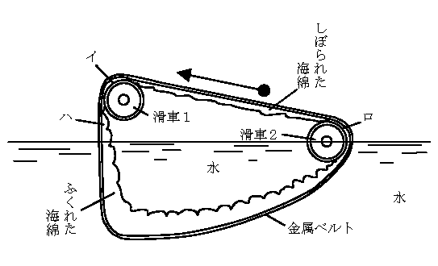

| ふしぎ国探検 | |
| 海野 十三 | |
| (2012) | |
ふしぎ国探検
海野十三
夏休の宿題
やけ野原
を、東助
とヒトミが、汗をたらしながら、さまよっていた。夏のおわりに近い日の午後のことで、台風
ぎみの曇
り空に、雲の行き足がだんだん早くなっていく。
東助少年は手に捕虫網
をもち、肩からバンドで、毒ビンと虫入れ鞄とを下げていた。ヒトミの方は、植物採集用のどうらんを肩から紐
でつっていた。この二人の少年少女は同級生であるが、夏休みの宿題になっている標本がまだそろわないので、今日はそれをとりにきたわけだった。
東助の方は、今日はどうしても、しおからとんぼか、おにやんまを、それからどんな種類でもいいから、あげはのちょうを捕る決心だった。ヒトミの方は、ぜひ、かや草と野菊とをさがしあてたいとおもっていた。
だが、二人のもとめているものは、いじわるく、なかなか手にはいらなかった。
「だめだわ、東助さん。こんなにさがしてもめっからないんだから、もうあきらめて帰ろうかしら」
と、ヒトミががっかりした調子でいった。
「いや、だめ、だめ。もっとがんばって、さがしだすんだよ。これだけ草がはえているんだから、きっとどこかにあるよ」
「そうかしら。だって東助さんも、まだとんぼがつかまらないんでしょう」
「とんぼのかずが少いんだよ。それに、みんな空の上をとんでいて下へおりてこないんだ」
「やけ野原でさがすことが無理なんじゃないかしら」
「だってしようがないよ。この近所で、やけ野原じゃないところはないんだから」
「それはそうね」
ヒトミは、まぶしく光るやけ野原を見まわして、ため息をついた。東助は、またとんぼににげられてしまった。
「ヒトミちゃんの理科の宿題論文は、なんというの」
東助は、きいた。
「理科の宿題論文？ それはね、『ユークリッドの幾何学について』というのよ」
「ユークリッドの幾何学についてだって。むずかしいんだね」
「それほどでもないのよ。東助さんの方の宿題論文はなんというの」
「僕のはね、『空飛ぶ円盤と人魂
の関係について』というんだ」
「空飛ぶ円盤と人魂の関係？ まあ、おもしろいのね」
「おもしろいけれど、僕はまだどっちも見たことがないんだもの。だから書けやしないや」
「あたしね、人魂の方なら一度だけ見たことがあるの」
「へえーッ、本当？ ヒトミちゃんは本当に人魂を見たことがあるの。その人魂は、どんな形をしていたの、そして人魂の色は......」
「あれは五年前の八月の晩だったわ。お母さまとお風呂
へいったのよ。その帰り路、竹藪
のそばを通っているとね――あら、あれなんでしょう、ねえ東助さん。あそこに、へんなものが飛んでいるわ。あ、こっちへくる」
急に人魂の話をやめたヒトミが、空の一角を指
しておびえたような声をあげた。
「え、なに？ どこさ」
たおれた石門の上に腰を下していた東助が、おどろいて立上り、ヒトミの指す方角を目で追った。
「あそこよ、あそこよ。ほら、空をなんだか丸いものがとんでいるわ。お尻からうすく煙の尾をひいて――」
「あッ、あれか。あ、飛んでいる、飛んでいる。飛行機じゃあない。へんなものだ。へんなものが空を飛んでいく」
東助少年は見ているうちに、寒気
がしてきた。それは色の黒っぽい丸みのある物体だった。それは何物か分らなかった。お尻のところからたしかに茶色がかった煙がでている。そしてそれは一直線には飛ばないで、ぶるんぶるんと三段跳びみたいな飛び方を空中でしていた。
「東助さん。あれが、『空飛ぶ円盤』じゃない？」
ヒトミがさけんだ。
「そうかしらん。僕も今そう思ったんだけれど、『空飛ぶ円盤』ともすこしちがうようだね。だってあれは円盤じゃないものね。ラグビーのボールを、すこし角
ばらせたようなかっこうをしているもの」
「西洋のお伽噺
の本で、あんなかっこうの樽
を見たことがあったわ」
二人がそういっているうちに、その怪
しい物体は気味
のわるい音をたてて近づいてきたが、そのうちに、急にすうーッと空から落ちてきた。二人が立っていたところから五十メートルばかりはなれた大きな邸宅
のやけあとの、石や瓦
のかけらが山のようにつみかさなっているところへ、どすんと落ちた。
たしかに落ちたことは、二人が目でも見たし、またそのあとで地震のような地ひびきがして、二人の足許から気味わるくはいあがってきたことでも知れる。
東助とヒトミは、恐ろしさに顔色
を紙のように白くして、たがいに抱
きあった。
空飛ぶ怪物
それから後、もっと恐ろしいことが起るのではないかと、二人はかくごしていた。
しかしその後、べつに恐ろしいことは起らなかった。音もせず、光りもせず、静かな広々とした一面のやけ野原がねむっているだけのことであった。
東助とヒトミは、ようやく気をとりなおして、左右にはなれた。そして二人は、おたがいが今見たことについて語りあった。二人は全く同じものを見、そしてそれが落ちた場所についても意見が一致することをたしかめた。
「いってみようか、落ちたところへ。きっとあれは『空飛ぶ円盤』の一種だろうから、今見ておけば僕の書く論文の参考になるからねえ」
東助は元気づいて、そうまで思うようになった。恐怖の念は、いつの間にか消えてしまい、それにかわって、ぜひそのふしぎな物体を近くで見たいという好奇心が、むくむくとあたまをもたげてきた。
ヒトミも、もともとメソ子ちゃんの組ではなく、なにごとにもどんどんとびこんでいく方の明るい性質の少女だったから、東助がそういいだすと、ヒトミもおもしろがって、早くあそこへいってあれをひろいましょうといって、足を向けた。
二人は駆
けだした。だれかにひろわれては損をすると思ったからだ。しかしよく考えてみると、この広々としたやけあとは無人
の境
としてほってあるので、さっきから長い間、二人のほかに一人の人影もみなかったほどである。だからひろわれることもあるまいと思われた。
二人の足は、しだいにおそくなった。それは、あのあやしい物体の落ちた近くまできたので、気味がわるくなったわけだ。二人はいつの間にか、としよりのように前かがみになり、全身を神経にして、用心ぶかく一足一足近づいていった。
たしかに、ここだと思うところまできた。しかるに、あのあやしい物体は見つからないのであった。
「へんだねえ。たしかにここんところへ落ちたんだがね。ねえヒトミちゃん」
「そうよ。むこうから見ると、あの太い焼棒
くいと、こっちの鉄の扉との間だったから、どうしてもこのへんにちがいないと思うわ」
「でも、見つからないね、まさか消えてしまうはずもなし、どうしたのかしらん」
二人は、ふしぎに思って、そこらをさがしまわった。が、ないものはなかった。あるのは瓦や石っころやさびた鉄ばかり。二人は夢を見たのであろうかと、うたがった。
そのときヒトミが東助をよんで、地上を指した。
「東助さん。ここに穴があいているわ。この穴の中へころげこんだんじゃあない」
「なるほど、穴があるね。これかしらん」
と、東助が穴の方へ近よったとき、ふいに足の下がくずれだした。ヒトミが手をだして東助をすばやく手許
へひっぱってやらないと、東助は穴の中へ落ちこんだことであろう。
土がくずれて、あとにできた穴は大きかった。一坪
ぐらいの穴になった。どうしたわけかと二人がのぞきこむと、どうやらそこは地下へおりる階段があるらしく思われた。そしてその底はまっくらで、何があるのか分らなかった。
ここまでつきとめたことだから、二人はもういくところまでいく決心をした。
二人は持っていた捕虫網やどうらんをそこへおくと、砂や石ころのざらざらする階段を、そろそろと下りていった。
長い階段をようやくおりきると、そこはがらんとした地下室になっていた。そしてどこからか一道の光がさしこんでいて、しばらくすると二人の目がやみになれて、室内をどうやら見定めることができるようになった。
このだだっぴろい地下室には、なんにも残ってなかった。――いや、一つだけあった。奥の隅
っこに、一つの黒ずんだ樽
がちょこなんと床の上におかれてあった。二人は同時にそれを発見したので、同時にびっくりして、両方からよりあって、手をにぎった。
「あれが空を飛んでいたんだ」
「そうよ。やっぱりこの穴へ落ちこんだのね。なんでしょう、樽みたいだけれど......」
「そばへよって、よく見てみよう。だけれど時限爆弾じゃないかなあ」
「そんなものが今空をとんでいるはずはないわ。きっと樽よ。中にお酒か、金貨
が入っているんじゃない」
「よくばっているよ、ヒトミちゃんは。そばへよってから、どかんと爆発して、死んでしまっても知らないよ」
「だって、ただの樽の形をしているわ。きっとぶどう酒が入っているのよ」
「ぶどう酒が入っている樽が、どうして空をとぶんだい。へんじゃないか」
そういっているとき、とつぜん樽に小さい煙突
みたいなものがはえた。と思ったら、にわかにどろどろとあやしい鳴りものがし、ぴかぴかと電光が光った。
「あッ」
「東助さん」
とつぜんの変事に、二人はしっかり抱
きあった。しかし二人の目は、樽からはなれなかった。
その時、樽の煙突からすうッと白い煙がでて、高くのぼった。と、その煙の中から、大きな人の顔があらわれた。鼻の高い、ひげもじゃの、あまり見かけない顔だった。
何者であろうか、その怪人
は？
怪
しい博士
ほんとうのことをいうと、東助とヒトミは気をうしなう一歩手前までいった。しかしそれをようやくがんばることができた。二人は見た。樽の煙突の中からたちのぼった白い煙の中から、背の高い怪人があらわれて、そばに立ったことを。
「あなたがた、こわがること、ありましぇん。わたくし、ポーデル博士であります」
怪
しい人は、そういって、二人の方に笑って見せた。彼は外国人のようであった。脂
ぎった白い顔に、ほほひげがもじゃもじゃだ。大きな鼻の上に、黒い眼鏡をかけている。頭の上には、小さな四角い大学帽がのって、上から赤い房がたれている。そういえば、この怪人は肩から長い緋色
のガウンを着ていた。白い顔と白いカラーが、赤い房と緋色のガウンによくうつる。しかし彼の顔はどこまでも気味がわるい。
「わたくし、あなたがたにあうために、この土地へきました。あなたがたを、おもしろいふしぎな国へあんないいたします。あなたがた、わたくしについてきます、よろしいですか」
ポーデル博士は、そういって、しきりに手を樽の方へふってすすめる。
東助とヒトミは、そのときまで声をだすことさえできなかったが、あまりおそれていてもよくないと思ったので、東助はヒトミに目くばせをして、怪人の方へすすみよった。
「あなたは、いったいどなたですか。ポーなんとか博士とおっしゃいましたが、どこの国の方ですか」
東助は、なるべく気をおちつけようとつとめながら、一語一語をはっきりいった。
「わたくし、ポーデル博士です。ポーデル博士という名前、よびにくいですか。それならば、ポー博士でもかまいましぇん」
「どこの国の方ですか」
「わたくしの国？ ははは、それは今いいません。しかしやがて自然に分りましょう。けっしてあやしい者ではありましぇん。安心して、ついてくるよろしいです」
「いや、あなたを信用することなんかできません。あなた――ポー博士と名乗るあなたはいろいろ、あやしいことだらけです。第一、さっきから見ていれば、あなたは白い煙の中から姿をあらわしました。その白い煙は、この小さな樽の中からでてきました。この樽は、あなたの身体の四分の一の大きさもありません。その中から、そんな大きな身体がでてくるなんて理屈にあわないことです。ですから僕たちは、あなたをお化
けか、それとも魔法使いだと思います。そういうあやしい人のいうことなんか聞いて、ついていけません。ふしぎな国は見たいですけれど......」
「ははは。あなたがた、つまらない心配しています。わたくし、決してあやしくない。お化けでもありましぇん、魔法使いでもありましぇん。あなたがたがあやしいと思うこと、本当は決してあやしくありましぇん。あなたがた理科の勉強が足りないから、そう思うのです」
「お待ちなさい、ポーデル博士。僕の問いをごまかしてもだめです。なぜ博士の大きな身体が、小きな樽からでてきたかをわかるように説明して下さらない間は、何一つ信用しません」
東助は、なかなかゆずらなかった。
すると怪人博士は、大きくうなずいてから、ヒトミの方を見ながらいった。
「あなたがたは、この世界をユークリッド幾何学の空間であると考えていますね。しかしそれはまちがいです。ユークリッドでない空間、つまり、非ユークリッド空間というものが本当にあるのです。それですよ、わたくしが今でてきたのは。この世界と、樽の中の世界とは、非ユークリッド空間でもって、つながっているのです。うそだと思ったら、あなたがた、わたくしのいうとおりにして、この煙突から樽の中へ入ってみる、よろしいです。そこにはびっくりするほどの広々とした世界があります。そこへ案内いたしましょう」
ポーデル博士は熱心を面
にあらわして二人にすすめた。
あまりのふしぎにうごかされ、東助とヒトミは思いきって、その樽の中にはいってみようかという気になった。
小さい樽の中に、うまくはいれるだろうか。またそのふしぎの樽の中には、どんなにおどろくべき世界が待っているのだろうか。
樽
の中
ポーデル博士の話のおもしろさにつられて、東助もヒトミも、ふしぎの樽の中へ入ってみようと思った。
しかし、なんだか気味がわるい。
「では、三人で、手をつないではいりましょう。東助さん、先へはいります。東助さんの手、ヒトミさん、にぎります。するとヒトミさん、次に樽の中へはいります。ヒトミさんの手、私にぎります。すると三番目に、私、はいります。これ、よろしいではありましぇんか」
博士は、三人が手をつなぎあってはいることを、すすめた。
「だって、こんな小さい穴の中へ、ぼくの大きなからだがはいるはずはないです」
「まだ、あなた、そんなこといってますか。私のことば信じなされ。その小さな樽の中にきっとはいれると思いなさい。そうしてとびこむ、よろしいです。ふしぎに、はいれます。うそ、いいましぇん」
「そうかなあ」
「平行線は、どこまでいっても交
わらない。そうきめたのはユークリッド空間です。しかし私のご案内する非ユークリッド空間では、平行線もやがて交ります。だから大きいものも、先へすすめば小さくなります。あなたのからだも小さくなってはいります。うたがうことありましぇん。さあ早くおはいりなさい」
東助には、博士のいうことが、よく理解できなかったけれど、平行線がやがて交わるものなら、やがてからだも小さくなるような気がしたので、思いきって樽の小さい穴へとびこんでみることにした。
「ではお先へ、ワン、ツー、スリー」
東助は、思いきって、小さい穴の中へとびこんだ。水泳のとびこみのように、手と頭の方を先にして。......ただし左手はヒトミと手をつないでいるので、右手だけを先にのばした。
と、東助の頭は、急にくらくらとなった。耳もとで、すごい雷のような音を聞いた。しかしそれもほんのちょっとの間ですんだ。次は急に気もちがよくなった。
さわやかな音楽が耳に入った。すばらしいいい香が、はなの中へはいってきた。あたりが明るくなった――見なれない部屋の中に、彼は腰をおろしていた。
あまり広くない部屋ではあるが、まわりにいっぱい器械がならんでいた。そうだ、どうやら大きな飛行機の操縦室のようだ。しかしそれにしても、あまりにりっぱな複雑な器械がいっぱい並んでいる。こんな大仕掛の操縦室をもった飛行機は、よほど大きい飛行機にちがいない。
「東助さん。なにをぼんやり考えこんでいらっしゃるの」
ヒトミの声だった。
うわッと、われにかえってふりかえると、いつの間にはいってきたのか、ヒトミもいるし、ポーデル博士もにこにこと、ひげだらけの顔をうごかして笑っている。
「どうです。私、いったとおり、ありましょう。小さい穴、はいれました。そして中、このとおりなかなか広い」
博士は得意のようだ。いつの間にか服がかわっていた。探検家がアフリカの猛獣狩にいくような半パンツの軽装になっている。頭の上には、四角い大学帽のかわりに、白いヘルメット帽がのっている。そして口には、とうもろこしでこしらえたパイプをくわえて、煙草のけむりをぷかーり、ぷかーり。
東助は、自分のとおってきたあとを考えて、ふしぎでしかたがない。
「ここは樽の中ですか。それとも、別の場所ですか」
「もちろん樽の中です」
すると、自分たちのからだは小さくちぢまったことになるのかな。
「さあ、私がこれからこの樽を操縦しておもしろい国へ案内しますよ。あなたがた、そこのいすに腰かけて十五分ほど待つ、よろしいです」
そういうと博士は、操縦席らしいいすの一つに腰をかけた。そしてレバーをうごかしたり、操縦桿
をひねったりした。かすかな震動
が起って、部屋がうごきだした。
ああ、今、樽がとびだしたのだ。
どこへいく、奇妙な飛行樽は？
何の注射か
博士は、その行先について、なにも語らなかった。いってから、目をあけて見れば、ひとりでによくわかるといった。
東助とヒトミとは、向こうへいきつくより前に、すこしでもその国がどんなところであるか知りたかった。そして博士に、いくどもねだった。
博士は怒りもせず、ますます上きげんに見えた。そしてやっとパイプのすきまから、すこしばかりしゃべった。
「世界には、だれが住んでいますか」
「世界にですか。人間が住んでいます」
博士の質問に、東助がこたえた。
「人間だけですか。蟻はどうですか。桜の木はどうですか」
「ああそうか。さっきの答を訂正します。世界にはたくさんの動物が住んでいます。人間もふくめて動物の世界です」
東助は、ヒトミをふりかえって、この答は正しいだろうと、目できいた。ヒトミはうなずいた。
「そうでしょうか」と博士はいった。
「では、もう一つききます。地球の上でうごきまわっているのは何ですか」
まるで「話の泉」のようであった。
「それは動物です。人間や馬や鳥や魚や、それから甲
むしや蝶々やみみずや......みんな動物です」
これはヒトミが答えた。
「その外ありましぇんか」
「動物の外、うごいているものはありません。動物とは、動くものと書くんですから、動くものは動物です」
ヒトミが自信をもっていった。
「そうでしょうか」と博士はいった。
「ではもう一つだけたずねます。地球の上で、感覚をもっているものは何でしょうか。いきたいと思った方へいったり、寒くなれば寒さにたえるように用心したり、おいしい空気をすったり、のみたければどんどん水をのんだりもする。それは何でしょうか」
「それは動物です」
「あたしもそう思います。動物です」
二人は答えた。それにきまっているからだ。
「そうでしょうか」
と、博士は、こんども疑いのことばで答えた。
なぜ、そんなにわかりきったことを疑うのですか。――と、東助もヒトミも博士にききかえしたいくらいだった。
「世界は動物のもの。地球の上で動くのは動物。感覚があり、したいことをするのも、また動物。あなたがた、そういいましたね。――よくこのことをおぼえていて下さい。あとになって、私はもう一度、あなたがたに、同じことをたずねます」
博士は、なぞのようなことをいった。
「話をしているうちに、もうきました。そのふしぎな国へ下りていきます。ちょっと目まいがするかもしれましぇん。すこしですから、がまんする、よろしいです」
博士のことばが切れると同時にとこからともなく、へんな音響がきこえはじめた。それは奇妙
な音色をあげつつ、かわっていった。と、二人は俄
に胸
さきがわるくなって、はきそうになった。
が、間もなくそれは消えた。いやな音も消えた。震動もなくなった。博士がのっそりと操縦席から立上った。
「いよいよ、あの国へきました。これから下りていくのですが、その前に、私たちは特別の注射をいたします。この注射をしていかないと、おもしろいもの見られましぇん。腕をおだし下さい」
博士の手に、いつの間にか注射針がにぎられていた。
もうここまできては、博士のいうことをきくしかないので、東助もヒトミに目くばせして、注射をしてもらった。それはべつに痛くもかゆくもない注射だった。気分も大してかわらなかった。ただなんとなく気がのびのびして前よりは、いい気持だった。
「それでは、こっちからでましょう」
博士は先へ立って、戸を開いた。
直径二メートルほどの大きな円形の戸口があいていた。外はくらくてみえない。
博士に手をひかれて、東助とヒトミとは、ワン、ツー、スリーで外へとびだした。雷鳴のような音、息ぐるしさ。それらは前と同じようであった。
が、急にあたりが明るくなった。
太陽が頭上にかんかんとかがやいている。涼しいそよ風がふいてくる。見ると一面の砂漠であった。
ふりかえると、この前、地下室で見たと同じ形の小さい樽が一つ、砂の上にあった。そして白い煙をはいていた。この小さい樽の中からでてきたのかと思うと、ふしぎでならない東助とヒトミだった。
「ここはどこですか。どこに、おもしろいものがあるんですか」
「まだ気がつきましぇんか。あそこをごらんなさい」
博士が地平線をゆびさした。
東助とヒトミは、ゆびさされた方を見た。が、見る見る二人の顔におどろきの色がうかんだ。
緑色の怪物
地平線のかなたに、何が見えたか。
はじめは、地平線の上に、緑色の海があって、波が立っているように思われた。が、すぐそれはまちがいであると分った。地平線の上を、緑色のあやしい姿をした怪物が、さかんに踊りまわっているのであった。
それは、おそろしいほどたくさんの集団に見えた。
「なんでしょう、あれは......」
「こっちへくるわ。いやあねえ」
「なんですか、あれは。ええと、ポーデル博士」
東助は、うしろに立って、にやにや笑っている博士にたずねた。
「彼らは、今に、こっちへくる。来れば、それが何者だかわかるでしょう」
博士は、それ以上語ろうとはしなかった。
博士のいう「彼ら」とは、いったい何者であろう。二人が目をみはっているうちにも、彼らの集団は、だんだんこっちへ近づくのが分った。彼らは、頭の上に長い手をふりたてて踊りくるっている。みんな緑色の細いからだを持っている。赤い花みたいなもので、からだをかざりたてているのもあるようだ。
「あれ、何なの。あんな生きもの見たことないわ」
「あれで動いていないと、熱帯の林のようなんだけれどね。しかし林ではない。林はしずかなところだ。彼らは、それとはちがって、気が変になったように踊っている。いや、こっちへおしよせてくる。気持が悪いね」
ヒトミは、いつとなく東助の方へからだをよせて、手をしっかりにぎっていた。
彼らの姿が二人の方に近くなるにしたがって、彼らのいきおいのはげしさにおどろかされた。彼らは洪水
のように、こっちへおしよせてくる。
その間にも、東助は彼らの正体をつかもうとして一生けんめいだった。
「ヒトミちゃん。あれは木だよ、蔓草
だよ。みんな植物だ。植物が、あんなに踊っているんだ。いや、ぼくたちを見つけて、突撃してくるんだ。おお、これはたいへんだ」
「ああ、気味がわるい。なんだって植物がうごきまわるんでしょう。あれは椰子
の木だわ。あッ、マングローブの木も交
っているわ。あの青い蛇のようにはってくるのは蔓草だわ。まあ、こわい」
「ふしぎだ、ふしぎだ。今までにあんな植物を見たことがない。話に聞いたこともありゃしない。ふしぎな植物だ。動物になった植物とでもいうのかしら」
東助もヒトミも、息をつめて、奇怪なる有様
に気をうばわれている。
彼らはますます近くなって、ふしぎな姿をはっきり見せた。すくすくと天の方へのびて、梢
にみるみる実を大きくふくらませる椰子
の木。とめどもなく枝を手足のようにのばし、枝のさきをいくつにもひろげて、こっちへおしよせてくるマングローブの木。煙がはうようにのびてくる仏桑花
。そして赤い大きな花がひらいたと思うと、たちまちすぼみ、また大きな花がたくさん次々に咲いてはすぼみ、まるで花で呼吸をしているようであった。
と、いつの間にか蔓草
が地をはってしのびよっていた。ヒトミはびっくりして、悲鳴をあげた。そのときはもうおそかった。ヒトミの腰から下は、蔓草のためにぐるぐるまきになってしまった。そしてその蔓草の先が、蛇のように鎌首
をあげてヒトミの肩へはいあがった。
「なにをするんだ。こいつ......」
と、東助はヒトミを助けるつもりで蔓草とたたかった。しかし彼はかんたんに蔓草にまかれてしまった。二分間とかからないうちに東助は、蔓草のためぐるぐるまきにされてしまった。
ヒトミも東助も、悲鳴
をあげるばかりであったが、そのうちに、二人のまわりは草と木とでとりまかれ、日光もさえぎられてしまった。密林の中にとじこめられたんだ。いや、その密林は緑色をした化物どものあつまりで、二人のまわりにおどりまわっている。
「た、助けてくれ......」
「助けて下さい。ポーデル先生」
「はっはっはっ。ほんとうに悲鳴をあげましたね。助けてあげましょう。しかし分ったでしょう。植物も動くということを。そして地球は動物の世界だというよりも、むしろ植物の世界だということを、植物にも感覚があるということ――三つとも分かりましたね」
「ええ。でも、彼らは特別の植物です。お化けの植物です」
「そうではありましぇん。ふつうの植物です。いまあなたがたに注射をすれば分ります」
博士は二人に注射をした。
するとふしぎなことがあった。今まで踊っていた植物どもは、急におとなしくなり、やがてぴったりしずまった。――それはどこにでも見られるしずかな熱帯林
の姿であった。
博士は、二人のからだから蔓草を切りとった。そして笑いながら説明をしてくれた。
「さっきここへきてから三十分にしかならないと思うでしょう。しかし本当は三年間たちました。つまり注射の力で、あなたがたは三年間をたった三十分にちぢめて植物のしげっていくのを見たのです。こうして時間をちぢめてみると、生物であること、よく動くことがお分りでしょう。どうですか。おもしろかったでしゅか。お二人さん」
東助とヒトミは、ほっと安心して、ため息をつくばかりであった。
聞いたような名
「おいおい、もう目をさましても、いいじゃろう」
ポーデル博士の声に東助もヒトミも、ねむりから起こされてしまった。
ポーデル博士は操縦席に腰をおちつけ、しきりに計器を見ながら操縦桿
をあやつっている。――この樽ロケット艇は、どこを目ざして飛んでいるのであろうか。
「ポーデル先生。こんどは、どのようなふしぎな国へ連れていって下さるのですか」
東助は、うしろから博士に声をかけた。
「これからわしが案内しようという先は、ちょっとかわった人物なんでねえ。君たちは気持わるがって、もう帰ろうといいだすかもしれんよ」
「大丈夫ですよ。ぼくは、いつもこわいものが見たくて、探しまわっているんですよ」
「あたしだって、こわいもの平気よ。ポーデル先生、そのかわった人物というのは一つ目小僧
ですか、それともろくろッ首ですか」
「うわはは、二人とも気の強いことをいうわい。いや、一つ目小僧やろくろッ首なのではない。また幽霊でもない。それはたしかに生きている人物なんだ。彼はすばらしく頭のいい学者でのう、大学教授といえども彼の専門の学問についてはかなわない。かなわないどころか、さっぱり歯が立たないのじゃ」
「先生、その方はどんな学問を専攻していられるんですか」
「オプティックス――つまり光学、ひかりの学問なんだ。光の反射とか、光の屈折
とか、光の吸収とか、そういう学問の最高権威だ」
「じゃあ、あたり前の学問ですわ。別にかわっていないと思いますわ」
「いや、大いにかわっている。それは君たちが実際ケンプ君――ドクター・ケンプというのが彼の名前さ。そのドクター・ケンプにじっさい会ってみりゃ、ただちにわかる。一目見れば分るのだ」
「ドクター・ケンプですね。はてな、その名前ならどこかで聞いたような気がするが......」
と、東助は考えこんだが、すぐには思い出せなかった。
「おお、この下だ。急降下するよ。目がまわるよ」
博士の声につづいて、艇
はがたんと下へ落ちはじめた。目がまわる。
「もういいよ。外へでようや」
博士の声に、われにかえった二人だった。しずかだ。気持もぬぐったようになった。そこで一同は、例の非ユークリッドの空間に通ずる扉を開き、外へでた。
目の前に、古ぼけた洋館が建っていた。ペンキははげちょろけで、のきはかたむいていた。窓という窓には、かっこうの悪い鎧戸
がしまっていて、あいた窓はない。あき家なのかしらん。いや、そうではない。煙突から黒い煙がでている。中で石炭をストーブにくべているんだ。それなら中に人がいることまちがいなしだ。
ポーデル博士は、空飛ぶ樽を、草むらの中にかくしたあとで、石段をのぼって玄関の前に立ち、上からぶら下っている綱
を二三度ひいた。
ことばは分らないが、ゆがんだ声が、家の中から聞えた。と、中でかけ金が外れる音がしてから入口の扉がすうーっと内側へあいた。
「この前、君にお話しておいたとおり、この二人が君にぜひあいたいというお客さんじゃ」
と博士は、家の中の人に、東助とヒトミを紹介した。二人は、あわてて家の中へおじぎをした。しかし家の中の人の姿は見えなかった。
「みんな入りたまえ。早く！」
ごつごつした声が、家の中からとびだした。
「お許しがでた。さあ入りたまえ、君たち」
博士にうながされて東助とヒトミは、家の中へとびこんだ。――だが奇妙なことに、玄関を入った廊下には、誰もいなかった。
「ポーデル先生。あのドクターは、どこにいらっしゃるんですの」
ヒトミが、そういってたずねたとき、きげんのわるい咳
ばらいの声が、二人の子供のうしろに聞えた。二人はびっくりして、うしろをふりかえったが、しかしそこにはやっぱり誰もいなかった。
そのかわりに――というと、ちょっとおかしいが、玄関の扉がひとりでに動きだして、ばたんとしまった。そしてかけ金が、ひとりでに動きだして、がちゃりと音をたてて懸
った。
ヒトミはもちろん東助も、頭から冷水
をぶっかけられたように、ぞおーッとして、左右からポーデル博士にすがりついた。
「幽霊屋敷......」
「目に見えない幽霊がいるんですね。何者の幽霊ですか」
見えない人
「さわいでは、いけないね。この家のご主人に対して失礼だから」
と、博士は冷やかに二人にいった。
そのときまたもや例のふきげんな咳ばらいの声がそばで聞え、それからたしかに人間がたっているにちがいない足音が、とんとんとんと廊下を奥へ伝わっていった。が、それは足音だけのことでやっぱり姿はなかった。
「ドクター・ケンプは、いつもぶっきら棒
にものをいう。しかし心はいい人なんだから、君たちは恐れずに、何でも質問したまえ」
博士が二人の子供に注意をあたえた。
「あ、思い出したぞ」と東助がこのとき叫んだ。
「ドクター・ケンプは透明人間なんでしょう。ねえポーデル先生」
「ドクター・ケンプといえば、透明人間にきまっているさ」
と博士は分り切ったことを聞く奴
だといわんばかりの顔をした。
「いったい彼は、どんな学問を使って、からだを見えなくすることに成功したか、それが大事なことなんだから、ぜひたずねてみたまえ」
廊下の奥の左側の扉が、ひとりでに内側へ開いた。もう二人は、前ほどおどろかなかった。そのかわり、早くケンプの前へ立って、ほんとうにドクターのからだが透明で、何も見えないのかどうかをたしかめたくなった。
「入口をまっすぐ入って、この三つの椅子に腰をかけたまえ。勝手に部屋の中を歩きまわることはごめんこうむる」
部屋の中からドクターの声がし、そして椅子が、生きているようにがたがたと肩をふり、足をふみならした。
入ってみると、この部屋はドクターの化学実験室だと見え、天井は高く、まわりの白壁は薬品がとんだと見えて茶色に汚れた所が方々にあった。まわりの壁は、薬品戸棚と、うず高くつみあげた書籍雑誌で隙間
もない。中央に大きな台があって、その上にごたごたと実験用の器具やガラス製のレトルト、ビーカー、蛇管
、試験管などが林のように並んでいた。三人の椅子は、その台の前にあった。
東助も、ヒトミも、目を丸くしてこの実験台の異風景に見とれていたが、とつぜん、一箇の架台
がレトルトをのせたまま宙に浮いた。
「あッ」
その架台は横の方へいって再び台の上へ足をおろした。次はビーカーがいくつも、ひとりでに台の上からまいあがって、台の隅
っこへもぐりこんだ。試験管が、ことんことんと音をたてながら台ごと横へすべっていった。
と、とつぜんじゃーッと音がして、栓から水がいきおいよく流れだした。すると大きなビーカーが動きだして、水を受けた。
水はビーカーの中に八分目ぐらい入った。水道の栓がひとりでに動いて、水がとまる。こんどはビーカーが実験台の上へもどってきた。と、アルコール・ランプの帽子がとび上って、台の上へ下りた。と、引だしからマッチがとびだしてきて、一本の軸木がマッチ箱の腹をこすった。軸木に火がついた。その火はアルコール・ランプの芯
に近づいた。ぽっと音がして青白い焰
が高くあがった。するとこんどは架台
と金網
とが一しょにとんでいって、アルコール・ランプにかぶさった。水の入ったビーカーがとんでいって架台の上の金網の上に乗った。焰は金網を通じて、ビーカーの水をあたため始めた。
あまりの奇怪なる器具の乱舞
に、東助もヒトミも息をのんで、身動きもしなかった。そのときアルコール・ランプの燃える台の向こうから、例の特長のある咳ばらいが聞えた。ドクター・ケンプが、台の向こうに腰を下ろしたらしい。腰掛ががたりと床の上に鳴った。
「ケンプ君。どうして君は、君のからだを透明にすることができたのかね」
ポーデル博士が、台の向こうへ声をかけた。
姿のないドクターは、立てつづけに咳ばらいをした。
「透明というんではない。ほんとうは見えない人だ」ドクターは、怒ったような声で、ぽつんぽつんと喋
った。
「その研究には、永い年月をかけた。莫大な金を使った。ぼくは親爺
の金まで持ちだした。......三年かかれば研究はできあがると思ったが、だめだった。それから屋敷を売って次の五年間の研究費を作った。......五年目の終りになって、こんどこそうまくいくと思ったのが間違いで、致命的な問題に突当り、今までの研究は全部だめだと分った。がっかりして、ぼくは一週間死んだようになって寝ていた......やり直しだ。振
だしへもどって、はじめからやり直さねばならない。研究の費用はどうするんだ。何を喰って研究をつづけるのだ。
ぼくは、のこり少い持物をほとんど全部叩
き売った。ああ、やさしかった母親の残してくれたかたみの指環も売った。寒い冬を凌
ぐためにはぜひとも必要なオーバーさえ人の手に渡した。学者として生命にもかえがたい秘蔵の書籍三千冊も売り払った。ベッドさえ手放した。そしてこのあばら家へ転がりこんだ。......あとに残ったのは、今この部屋に転がっているものだけだ。実験の器具、ぜひ必要な本と研究録、わずかの生活道具だけになってしまった。
ぼくは元気をだして最後の研究にとりかかった。そのときぼくは、自分の健康がもうとりかえしのつかない程そこなわれているのに気がついた。それからのくる日くる日を悪寒
と高熱になやみながら、ぼくは新しい道から研究を進めていった。......十月十一日！ 忘れもしない、十月十一日だ。暁の光が窓からさしこんできたとき、三日間徹夜でつづけた研究が、遂に実を結んだ。見よ、ぼくの掌
の上にのっている一本の紐
は、手ざわりだけがあって形はなかった。ダイナモの力を借りて、ぼくはその紐を全然見えないものにしてしまったのだ」
猫の実験
見えない人ドクター・ケンプは、一息ついた後で、ふしぎな物語をつづける。
「ものに光があたったとき、その形が見えるのはなぜか。それは光がその物体にあたって反射するからだ。あるいは光が中へはいって屈折するからだ。もし光があたっても、光が反射もしなければ屈折もしなければ、ものガラスの形は全然見えなくなるのだ。......硝子
板は透明だが、ちゃんと形が見える。これは反射のない場合でも、光は空気の中よりも硝子の中でひどく屈折するからだ。
その硝子板を水の中につけてみる。と、こんどは前の場合よりずっと見えにくくなる。これは水の屈折率が硝子の屈折率とほとんど同じだから、光は硝子板をまっすぐに通りすぎる。そこで硝子板の形が見えにくくなるのだ。......もし硝子板をこなごなにこわした上で、水の中に入れてみる。するとその硝子の粉は、ほとんど完全に見えなくなる。これが偉大なるヒントだ。だからもし人間のからだの屈折率を、空気と同じにすることができればいいんだ。そして同時に、光を反射もしないし吸収もしないようにする。ああ、すばらしい思いつきではないか。そしてぼくは遂にその偉大なる仕事をやりとげたのだ。ごらんの通りだ。
ここにあるぼくの身体が見えるかい。硝子板は見えるが、ぼくの身体は、どう透
してみようが決して見えないのだ。ぼくの身体をこしらえている細胞は、或る方法によって変えられ、空気の中では全く見えなくなっているのだ。しかし細胞を変えるときには前後十時間、死ぬような苦しみをした。説明もなにもできないような苦しみを......」
ごとごとごとと、ビーカーの中の湯が沸騰
をはじめた。
「ぼくは、さっきもいったように、第一番に一本の紐を見えないものにした。その次、第二番目には、動物にそれをためして見た。一ぴきの仔猫が、いつも窓の向こうへのぼって日なたぼっこをしていた。ぼくはその仔猫を実験に使おうと思った。ぼくは、そっと硝子
窓をあけて、喰いのこした鰊
を見せた。仔猫は何なく中へ入ってきた。
仔猫が満腹して、椅子の上で睡
りだしたとき、ぼくはモルフィネを注射して、完全に睡らせてしまった。二十四時間は睡りつづけるだろう。ぼくは仔猫を抱きあげて、ダイナモの前においた。それから念入りに装置をしかけ、仔猫の細胞をかえにかかった。五時間を過ぎると、仔猫の身体はだんだん白っぽくなってきた。それから手足の先が、ぼんやりしてきた。七時間目には、仔猫は目をふさいだままだったが、あばれだして、口からものをはきちらした。よほど苦しいらしい。そして一時間たった。遂に仔猫の身体は見えなくなった。しかし手をやってみると、仔猫の身体はちゃんと台の上にあった。
だが仔猫の姿はまだ完全に見えなくなったわけではなかった。うすい青い丸い玉が二つ、台の上三センチばかりのところに宙に浮んでいた。それは猫の眼玉だった。なかなか色のぬけないのは、眼玉のひとみの色と毛の色、それから血の色だった。だから仔猫の眼玉が完全に消えてしまったのは二十時間後だった。
ぼくは手さぐりで、仔猫をゆわえてあるバンドをといた。そして部屋の隅の箱の中に移した。それからぼくは睡った。この実験のために非常に疲れていたから。
長い睡りから目をさました。猫の声がうるさく耳についたからだ。起きあがったが、猫の声はするが、姿は見えない。ぼくは直ぐ気がついた。『しまった、猫を紐でしばっておくんだった』と。ぼくはそれから部屋の中をぐるぐるまわって、猫の声を目あてに追いかけた。だが、なかなかつかまらない。そのうちにぼくは、箒
で硝子窓を壊
してしまった。猫の声がしなくなったのは、それから間もなくのことだった。見えない猫は、硝子の穴から外へとびだしたのにちがいない。
だからこの世の中に、見えない猫が一ぴき、すんでいるのだ。気をつけて下さいよ、その猫にいきあたったら。いつその猫に、のどをかき破られるか分らないんだ。気が変な猫になっているのだからね。......え、何か今、あなたがたの足の下を走ったって。ああ、あの透明猫かもしれない」
そのとき東助とヒトミは、たしかに猫の声を聞いた。この部屋の戸棚の上に。......だが猫の姿も見えなかったし、語り手の姿も同様に全く見えなかった。二人の前に見えるのは、ビーカーから高くたちのぼっている湯気
ばかりだった。
蠅
のテレビジョン劇
ふしぎなポーデル博士の、ふしぎな国々への案内はつづく。
東助とヒトミは、ポーデル博士の操縦する樽ロケット艇にのって、ふしぎな旅をつづける。
「博士。こんどはどんなふしぎな国へつれていって下さるんですか」
東助が、顔をかがやかして、きいた。
「こんどは、なかなか深刻
なところへ案内いたします」
「深刻なところって、どんなところですの」
ヒトミも座席から、からだをのりだす。
「蠅
の社会へ案内いたします」
「あら、蠅の社会が深刻なんですか」
「蠅の考えていること、人類にとってはなかなか深刻あります。これから私案内するところは、蠅が作り、そして蠅が演
ずるテレビジョン劇であります。それをごらんにいれます」
「まあ、すてき。蠅でも劇をするんですの。しかもテレビジョン劇なんて、あたらしいものを」
「人類は、人類のこととなるとわりあいによく知っていますが、その他のこと、たとえば馬のこと、犬のこと、兎のこと、毛虫のこと、蠅のことなどについては、あまりに知りません。それ、よくありません。蠅が何を考えているか、それらのこと、よく知っておく、はなはだよろしいです」
ポーデル博士は、いつになく深刻な顔つきになって、そういった。
「その蠅のテレビ劇を見るには、どこへいけばいいんですか」
「ヒマラヤ山の上へのぼります。そして山の上から下界
に住む蠅の世界がだすその電波を受信しましょう。ああ、きました。ヒマラヤのいただきです。しずかに着陸します」
博士のいったとおり、樽ロケット艇は気持よく、ゆっくりと着陸した。
「外へでるのですか」
「いや、外はなかなか寒い。今でも氷点下三十度ぐらいあります。蠅のテレビ劇は、この樽の中で見られます。この器械がそれを受けてこの四角い幕に劇をうつします。また蠅のいうことばを日本語になおしてだします」
「蠅のことばが、日本語になるんですの。そんなことができるんですか」
「できます。ものをいうとき、何をいうか、まず自分が心の中で考えます。考えるということ、脳のはたらきです。脳がはたらくと、一種の電波をだします。その電波を増幅
して放送します。それを受信して、復語器
を使って日本語にも英語にも、好きなことばになおします。わかりましたか」
「わかったようでもあり、わからないようでもあり」と東助は首をふって「それより早く、その蠅の劇を見せて下さい。いや見せて聞かせて下さい。その方が早わかりがします」
「よろしい。すぐ見せます。あなたがた、椅子
をこの前において腰かける、よろしいです」
そういって博士は、後向きになって、蠅の脳波を受信するテレビ受信機のスイッチを入れ、たくさんの目盛盤
をひとつずつまわしはじめた。
すると、四角い映写幕
に光がさして、ぼんやりした形があらわれて、ゆらゆらとゆれ、それからかすかなしゃがれた声が高声器の中からとびだした。
「何かでましたね。しかし何だかはっきりしませんね」
東助はいった。ヒトミも前へのりだす。
「今もうすこしで、はっきりします。お待ち下さい」
なるほど、そのとおりだった。間もなく急に画面がはっきりし、くさったかぼちゃの上に五六ぴきの蠅がたかっているところがうつりだした。
と、声も又はっきりしてきた。羽根
の音がぶんぶん、くちばしから、かぼちゃの汁をすう音がぴちゃぴちゃと、伴奏のように聞えるなかに、蠅たちは、しきりにおしゃべりをしている。――
「アナウンスをいたします。これは『原子弾戦争の果
』の第二幕です。あまいかぼちゃ酒がたらふくのめる、ごみ箱酒場で、大学教授たちが雑談に花を咲かしています」
「とにかく人類は横暴
である。かれらの数は、せいぜい十五億人ぐらいだ。この地球の上では、人類は象と鯨につづいて、数のすくない生物だ。それでいて、かれら人類は、地球はおれたちのものだ、とばかりに横暴なことをやりおる。まことにけしからん」
「まったくそのとおりだ」
「そうでしょう。数からいうと、人類なんか、われわれ蠅族にくらべて一億分の一の発言権もないはずだ。ところが人類のすることはどうだ。蠅叩
きという道具でわれわれを叩き殺す。石油乳剤
をぶっかけて息の根をとめる」
「まだある。蠅取紙という、ざんこくなとりもち地獄がある」
「ディ・ディ・ティーときたら、もっとすごい。あれをまかれたら、まず助かる者はない」
「あれは、まだ値段が高くて、あまりたくさん製造できないから、人類は思い切ってわれわれにふりかけることができない。まあそれでわれわれは皆殺しにあわなくて助かっているんだが、考えるとあぶないねえ」
「人類は、どこにわれわれ蠅族
を殺す権利を持っているんだ。けしからん。天地創造の神は、人類だけを作りたもうたのではない。象を作り、ライオンを作り、馬を作り、犬、猫、魚、それから蛇、蛙、蝶、それからそのわれわれ蠅族、その他細菌とか木とか草とか、いろいろなものを作りたもうた。われわれは神の子であるが故に、平等の権利を持って生れたのだ」
「そうだ。そのとおりだ。人類をのけたすべての生物は、人類に会議をひらくことを申込み、その会議の席でもって平等の権利を、人類にもう一度みとめさせるんだ。そして人類を、小さいせまい場所へ追いこんでしまわなくてはならぬ」
「大さんせいだ。蚊族、蝶族、蜂族などをさそいあわして、さっそく人類へ会議をひらくことをしょうちさせよう」
「それがいい。そうでないと、われわれはほろびる」
「やあ、諸君は、何をそんなに赤くなって怒っているのか」
「おお、君か。おそかったね。さあ、ここに席がある」
「ありがとう。......ちょっと聞いたが、また人類の横暴を攻撃していたようだね」
「そうなんだ。だからひとつ地球生物会議をひらかせ、人類をひっこませようと思うが、どうだ」
「もうそんなことをするには及ばないよ。人類はもうしばらくしたら亡んでしまう。人類は自分で自分を亡ぼしかかっている」
「ほんとかい。そんなことを、どこで聞いてきたのか」
「これは私の推論だ。いいかね、人類は最近原子弾というものを発明した。それは今までにないすごい爆発力を持ったもので、たった一発で、何十万何百万という人間を殺す力がある。そういうすごい原子弾を、人類は競争でたくさんこしらえている」
「ふーん、それはすごい。われわれはもちろん殺されてしまうね」
「それはそうだが、まあ待て。人類は亡びるが、われわれは亡びないんだ。というわけはやがて人類同士でこの次の戦争を始めるとなると、こんどはもっぱらこの原子弾を使う戦争となるわけだ。これはすごいものだぞ。戦う国と国とが、たがいに相手の国へ原子弾の雨を降らせる」
と、ものすごい原子弾炸裂
の音響があとからあとへとつづく。そして原子弾をはこぶ無人ロケット艇
の音がまじって聞える。また地上からは、死にいく人々のかなしい呻
き声がまいあがる。サイレンの音。高射砲の音。無電のブザーの音、聞えてはとぎれ、とぎれてはまた弱く聞えだす。と、また次の原子弾炸裂音が始まる。
「すごいじゃないか。おやおや、さっきまであった大都市が、影も形もないぜ。見わたすかぎり焼野原
だ」
「今の爆撃で、五百万の人間が死んだね。生きのこっているのはたった二十万人だ。しかしこの人間どもも、あと三週間でみんな死んでしまうだろう」
「われわれ蠅族も、そば杖
をくらって、かなりたくさん殺されたね」
「しかしわれわれの全体の数からいえば、いくらでもない。ところが今殺された五百万の人類は、人類にとっては大損失なのだ」
「なぜだい。人類はもともと数が少いからかい」
「いや、そうじゃない。今殺された五百万人の中には、あの国の知識階級の大部分がふくまれでいたんだ。一度に、知識階級の大部分を失ったことは、たいへんな痛手
だ。この国は、もう一度立直れるかどうか、あやしくなった」
と、またもや原子弾の炸裂音と死んでいく人々のさけび声がする。但し、こんどは遠方から聞える。
「やられた、やられた。この国はもう実力を失った。おしまいだ」
「どうしたんだね。どこだい、今の爆撃された場所は......」
「あれはね、この国の秘密の原子弾製造都市だったんだよ。ほら、見える。すごいね。原子弾が地中にもぐって炸裂したんだ、あのとおりどこもここも掘りかえされたようになっている。製造機械も、原子弾研究の学者も製造技師もみんな死んでしまった。この国は、もう二度と原子弾を製造することはできない。おしまいだ」
「没落
だね。するとこの国にかわって敵国がいばりだすわけかな」
「さあ、どうかね。この国だって、おとなしく原子弾にやられ放
しになっていたわけじゃあるまい。きっと敵国へも攻撃をするにちがいない」
チリチリチリンと電話のベルが鳴る。
「ああ、もしもし」
「ああ、もしもし。ああ君だね。えらいことが起ったよ。こっちの首都は、さっき原子弾の攻撃をうけて全滅となった。それからね、原子弾工場地帯が十カ所あったが、それが一つ残らず攻撃を受けて、器械も技師もみんな煙になって消えてしまったよ。もうこの国はだめだ。生き残っているのは、知識のない人間ばかりだ」
「そうだったか。やっぱりね」
「やっぱりね、とは？」
「こっちの国もそのとおりなんだ。ああ、今ぞくぞく情報が集ってくるがね。こっちのあらゆる都市や地方が、無人機にのっけた原子弾で攻撃を受けているよ。人類の持っていた科学力はことごとく破壊された。知識のある人類は、みんな殺されてしまった。ああ、人類の没落が始った。人類の没落だ。ざまァみやがれ」
「やーい、人類。ざまァみろ。さあ、この機
をはずさず、われわれ全生物は人類に向って談判
をはじめるんだ」
「そうだ。さしあたり、蠅叩
きや蠅取紙
を全部焼きすてること。石油乳剤
やディ・ディ・ティー製造工場を全部叩きこわすこと。それを人類に要求するのだ」
「窓の網戸をてっぱいさせるんだ。われわれの交通を妨害することはなはだしいからね」
「これから、われわれの仲間を一匹たりとも殺した人間は死刑に処
する」
「死刑だけでは手ぬるい。死刑にした人間の死体を、われわれ蠅族だけで喰いつくすんだ。それゆけ」
驚きの曲が鳴りだす。そして......
「アナウンスいたします。このところ一千年たちました」
「はっはっはっはっ」
「うわッは、はッはッ」
「ほほほほ。ほほほほ」
「ははは、愉快だ。もう満腹
だ。のめや、うたえや。われらの春だ」
「愉快、愉快。人類も滅亡したし、ライオンも虎も、牛も馬も羊も犬も、みんな死に絶
えた。みんな原子弾の影響だ。そしてわれわれ蠅族だけが生き残り、そして今やこの地球全土はわれわれの安全なる住居
となった。ラランララ、ラランララ」
「うわーイ。ラランララ、ラランララ。ひゅーッ」
「わが蠅族の地球だ。世界だ。はっはっはっはっ。人間なんかもう一人もいやしない」
終幕の音楽。
「アナウンサーです。劇『原子弾戦争
の果
』は終りました」
「どうでしたか、東助君、ヒトミさん。蠅
のテレビ劇はおもしろかったですか」
ポーデル博士がたずねた。
東助とヒトミは、それにすぐ答えることができなかった。二人の眼には、涙がいっぱいたまっている。
「おや、悲しいですか。何を涙しますか」
博士は、やさしく二人の頭をなでた。
「でもね、博士」と東助がとうとう声をだした。
「今の蠅の劇は、あんまりですよ。人類を意地悪くとりあつかっていますよ。人類は、そんなに愚
か者ではありません。原子弾を叩きつけあって、人類を全滅させるなんて、そんなことないと思うのです」
「しかし、原子弾の力、なかなかすごいです。人類や生物、全滅するおそれあります。地球がこわれるおそれもあります。安心なりましぇん」
「しかし、原子弾の破壊力をふせぐ方法も研究されているから、人類が全滅することはないと思います」
ヒトミも、考えをいった。
「しかし、ヒトミさん。地球こわれますと、人類も全滅のほかありません。原子弾の偉力とその進歩、はなはだおそろしいこと、世の人々あまりに知りません」
「ああ、そうだ。今の蠅のテレビ劇ですね。あれをみんなに見せたいですね。するとわれわれ人間は、蠅に笑れたり、ざまをみろといわれたくないと思うでしょう。だからもう人類同士戦というようなおろかなことはしなくなると思います」
「そうです。人類はたがいに助けあわねばなりません。深く大きい愛がすべてを解決し、そして救います。人類は力をあわせて、自由な正しいりっぱな道に進まねばなりません。人類の責任と義務は重いのです」
「博士がそういって下さるので、やっと元気がでてきましたわ」
「そうだ。僕もだ。けっして、蠅だけの住む地球にしてはならない。僕はみんなに、今の蠅の劇の話をしてやろう」
重力がなくなる
ポーデル博士は、樽
ロケット艇
の操縦席についた。
「博士。出発ですか」
東助が聞いた。
「そうです。また新しい目的地へでかけます」
「こんどは、どんな『ふしぎ国』へ案内して下さいますの」
ヒトミが博士にたずねた。
「こんどはね、ある宇宙艇の中に案内いたします」
「宇宙艇ですって」
「そうです。地球を後に、月世界へ向かう宇宙艇の中へ、あなたがた二人を連れてはいります。その宇宙艇は、だんだん宇宙を進んでいくうちに、だんだん重力がへってきます。――重力とは何か、あなたがた、知っていますね。どうですか、ヒトミさん」
「重力というと、あれでしょう。ニュートンが、リンゴが頭の上から地上へごつんと落ちたのを見て、重力を発見したというあれ
でしょう」
「そのあれです。しかしそれはどういうことなのでしょう。どんな法則ですか」
「ぼくがいいます。重力とは、物と物とがひきあう力です。そしてその力は、その二つの物の重さをかけあわしたものが大きいほど、重力は大きいです。それからその二つの物がはなれている距離が、近ければ近いほど、重力は大きいのです。もっとくわしくいうと、『距離の自乗
』に反比例
するのです」
「そうです、そうです。東助君、なかなかよく知っていますね。......ところで、さっきお話した宇宙艇ですが、はじめは地球に近いから地球の重力にひっぱられていますが、だんだん月の表面に近くなると、こんどは月の重力の方が大きくなります。そしてその途中のあるところでは、地球からの重力と、月からの重力とが、ほとんど同じに働きます。さあ、そうなると妙
なことが起ります」
「妙なことというと、どんなことですの。またこわいお話ですか」
「いや、こわくはありませんが、じつに妙なのです。つまりそのところでは、地球からの重力と月からの重力が同じであるが、この二つの重力は、方向があべこべなんです。地球の重力が、ま下の方へひくと、お月さまの重力は反対にま上へひくのです。下へと上へと両方へ、同じ力でひっぱられると、さてどんなことになると思いますか」
ポーデル博士は、にやにやと笑いながら、東助とヒトミを見くらべた。
「それじゃあ、同じ力でひっぱりっこだから、結局力が働いていないのと同じですね。二つの力を加えると、零
ですものね」
東助が、こたえた。
「そのとおり。つまり、そのところでは、両方の重力が釣合
って重力がないのと同じことになります。さあ、そういう重力のないところでは、どんなことか起るか」
「どんなことが起るでしょうね」
「物は、重さというものがなくなったように見えるでしょう。重さがなくなると、どんなことになりますか」
「大きな岩でも鉄の金庫でも、指一本でもちあげられるでしょうね」
と、東助がいった。
「そうです。もっと外
のことも考えられますか」
「ああ、そうだわ。鉄でこしらえてある金庫に腰をかけて、お尻にうんと力をいれると、その金庫がまるで紙製
の箱のようにめりめりといって、こわれてしまうでしょう」
「いや、ヒトミさん。それはちがいます。重力がなくなっても、そんなことにはなりません。なぜといって、重力がなくなっても、鉄の強さとか紙のやわらかさとかには変りはないのです。鉄はやっぱりかたいし、紙はそれにくらべるとやわらかいです」
「地球とか月とかの方へ引きつけている力がなくなるだけなんですねえ」
「まあ、そうです。そのほか、そこらにある物同士がおたがいに引きあっている重力もなくなるわけですが、この方は、地球又は月の重力にくらべると小さいから、はじめからないのと同じようなものです。地球とか月とかは、他の物――たとえば建築物や大汽船にくらべてみても、とてもくらべものにならないほど大きいから、重力も大きく作用するのです。さあ、それでは今から宇宙艇ギンガ号の中へ案内しますよ」
「ポーデル先生は、どうなさるんですか」
「わしもいっています」
「いっていますとは......」
「わしはその宇宙艇ギンガ号の乗組員の一人に変装していますから、どの人がわしであるか、向うへいったら、ぜひ探してごらんなさい」
と、博士がことばを結んだと思ったら、急にあたりが暗くなった。
宇宙艇の食堂
停電のような闇だった。
どこからともなく、ごとごとごとと、機械のまわっている音が聞えてくる。と、あたりはだんだん明るさをとりかえしていった。
（おや、りっぱな部屋だ、広くはないけれど。......ここはどこだろうか）
と、東助はあたりを見まわした。
それは、大きな球の中を部屋にしたようであった。壁がまっすぐではなく、凹
んで曲
っていた。まん中に、横に長い机がおいてあり、腰掛もある。東助は、その腰掛にお尻をのせ、机に向ってほほづえをついている。
正面に窓口みたいなところがあって、それに紺色
の小さい幕がたれている。
その幕の間から、白い手がでてきた。
と、湯気のたっているココアのコップと、パイナップルの缶詰とがあらわれた。白い手は幕の中に引っこんだ。
すると横手の戸があいて、ウェイトレスがでてきた。見るとそれはヒトミによく似ていた。しかしずっと年は上で、大人に近かった。
ヒトミにちがいないのだが。......
「お待ちどうさま、三等機関士さん。どっちも上等の品ですよ。ほっぺたが落ちないように。......ほほほほ」
そういいながら、ココアとパイナップルの缶詰を、東助の前においた。
（えへへ、おれのことを三等機関士なんていったぞ）
「今日は、食堂はひまなんだね」
東助は、すらすらと、そういった。口がひとりで、ぺらぺらと動きだしたのである。ふしぎなこともあればあるものだ。
「もう五分もすれば交替時間ですから、みなさんいらっしゃると思うわ」
「ああ、そうか。僕は修理で時間外に働いたから早く終
ってでてきたんだ」
「どこを直していらっしたの」
「超音波の発生機だ。困ったよ。こんど故障を起すと、人工重力装置がきかなくなると思うね。そうしたら一大事だよ」
「そうすると、どうなりますの」
「そうするとね、今ちょうど地球の引力と月の引力が釣合っている重力平衡圏
をわがギンガ号は飛んでいるんだが、もし人工装置がきかなくなると、艇内に重力というものがなくなって、皿がとんだり、天井に足がついたり、たいへんなことになるよ」
「まあ、たいへんね。そんなことになっては困りますわ。なぜもっと安全なように艇をこしらえておかなかったんでしょう」
「人工重力装置はぜったいに故障を起さないものとしてあったんだが、昨日大きな隕石
が艇の機関室の外側へぶつかったことを知っているね。あれ以来、どうも調子がよくないんだよ」
「困ったわねえ。重力は停電のように、ぴしゃりと消えちまうものなの」
「いや、じわじわと重力がへってくるだろう。しかし七八分たてば重力は完全に消えるだろうね」
東助は、とくいになって話しながら、パイナップルの缶詰を、缶切
でひらいた。
「ああ、いい匂いだ。うまいぞ、このパイ缶は。......おや」
東助が、さっと顔色をかえた。
「どうなすったの、三等機関士さん」
「からだが急にふわっと軽くなった。あんたはどう。そう感じない」
「あらッ、へんよ。あたしも、からだがふわっと軽くなりました。どうしたんでしょうか」
「いよいよ、おいでなすったんだ」
「えっ、何がおいでなすったのですの」
「人工重力装置が故障になったにちがいない、重力がだんだん消えていく。あッからだが浮きあがってくる」
「あら、まあ。どうしましょう」
「なあに心配することはない。大丈夫。ただ、いろんなものが動きだすからね。......あッ、ほら、缶詰の中からパイナップルの輪切
になったのが、ぞろぞろと外へせりだしてきた」
そのとおりだ。缶詰の外へ、黄色いパイナップルの輪切になったのが、まるで生き物のように、ぞろぞろとはいだしてきたのである。
「あれッ。パイナップルのお化
け！」
と、ウェイトレスがびっくりして、とびあがった。すると彼女のからだは、すうっと天井の方へのぼっていった。足で床をけったので、重力がきいていないから、かるがるとからだが浮きあがったのである。
「あーれエ。君、どこへいく？」
東助はウェイトレスをつかまえようと思って立上ったが、そのときやはり床をけったので、彼のからだも、ふわーり。
「おや、おや」
「あいたッ」
ヒトミによく似たウェイトレスは天井に頭をぶっつけた。そしてその反動で、こんどはからだがすーうと下り始めた。上る東助と、下りるウェイトレスとが、途中でいきあって、両方から手をだしてつかまりあったものだから、こんどは二人のからだがからみついて、空中をふーわ、ふーわ。
そのとき、紺色
の幕の奥で、
「うわッ、助けてくれ」
といった者がある。つづいてがたんがたんと、机や腰掛のぶつかる音。
と、戸があいて、そこからふわーッとでてきたのは、顔中髭
だらけのコック長であった。
「た、助けてくれ。コーヒーが、わしをおっかけてくる。あッ、あちちち。これはたまらん。助けてくれイ」
コック長は、一生けんめいに逃げる。彼のからだが、池の中へとびこむ蛙
のように長くのび、空間をすうーッとななめにとぶ。するとそのあとから、長い、にょろにょろした茶褐色
の棒が、ぽっぽと湯気をたてながら、コック長をおっかけて、彼のくびすじのところへつきあたる。
「あッ、あちちち。助けてくれ。コーヒーをとりおさえてくれ。やけど攻
めだ。わしは死んじまう」
その茶褐色の棒は熱いコーヒーだった。料理場の火の上にかかっていたコーヒー沸
しの口から、にょろにょろと外へでてきた熱い熱いコーヒーだった。重力がなくなったので、コーヒーはコーヒー沸しの底にじっとしてなくなったのだ。そこへちょっとした力が働いて、液状
のコーヒーは、コーヒー沸しの口から、にょろにょろと外へはいだしたのだ。
そのとき、天井の隅
にとりつけてある高声器が、交替時間になったことを告げた。
すると、反対の入口の扉があいた。そこから大ぜいの人が、この食堂へはいってきた。誰も彼もみんなからだを横にして部屋の中へはいってくる。まるで海でおよいでいるような恰好
だった。ちょっとした力を加えると、からだが前に走りすぎて、もう停まらなかった。だから、そういう連中は、そこらにある柱や壁や、電灯の笠や机や腰掛にかじりついて、やっと自分のからだを停めるのだった。
もちろん腰掛も机も、こんなときの用心に、しっかりと床に、ボールトとナットでしめつけてあった。
「おい。おいしいものを早くだしてくれたまえ」
「おや、ウェイトレスのヒトミさんやコック長がこんなところで、まごまごしているよ。パイ缶を一つとミルクセーキ一ぱい、早いところ頼むぜ」
と、食堂の空中を泳ぎながら、みんな註文をだす。
「はいはい。只今。しかし熱い料理や飲料は今、できませんよ。わしもみなさんも大火傷
しますからね。とにかく困ったものだ。早く人工重力装置の故障が直ってくれないことには、仕事がさっぱりできません。はい只今」
そういいながら、髭のコック長は、蛙のような恰好で料理場へとびこんでいった。
とたんに、停電のように急にあたりが暗くなった。
人間はおき去
り
「どうです。重力のない世界はおもしろかったですか」
いつの間にかポーデル博士が、操縦席からうしろをふりかえって、東助とヒトミに呼びかけた。
「ああ、コック長だ。博士はコック長に変装していたんですね」
「ははは。見つけられましたね」
「髭
だらけのコック長なんて、見たことがありませんわ」
「ははは、髭はとった方がよかったですね。さて君たちにたずねます。今訪問した世界は、宇宙艇の中の出来事でありました。ところが、もし、ああいうことが、地球の上で起ったとしたら、どんな現象が起るでしょうか」
「地球の上で生活しているとき、急に重力がなくなったら、どうなるかというんですか」
「そうです。どんなことが起りますか」
「分りました。私たちは鳥のように高い空をとぶこともできるし、ハンモックもないのに空中で昼寝をすることができますわ。たのしいですこと」
「海の水が陸へあがってくると思う。その海の水が雲のようになって空を飛ぶんだ。すごいなあ。アフリカのライオンが、いつの間にか空を流れて日本へやってくるようになる。そうですね、ポーデル先生」
「いや、もっとすごいことになります。あれをごらんなさい。地球に重力がなくなったときの光景が、航時機
の映写幕の上にうつしだされています。ほら、丸い地球の表面に、たいへんなことが起りはじめましたよ」
博士が指した壁のうえの映写幕に、地球の北半球の一部がうつっていた。地平線は丸く曲
っていた。地表から何物かが、ふわふわまいあがっている。よくみると、それは家屋
だった。橋だった。それから小さいものは自動車だった。みみずみたいに長いものは列車だった。きらきらと、塵
のようなものが浮かんで地表を離れていくのが見えたが、それはおびただしい人間の群だった。
「見えましょう。大都会が、今こわれていくところです。市民たちは、ずんずん地面から離れていくでしょう」
「なぜ人間や建物なんかが、あのように、どんどんとんでいくのですか。はげしすぎるではありませんか」
「はげしすぎることはありません。そのわけはこうです。地球は一秒間に三十キロメートルの速さで、空間を走っているのです。重力があれば、建物も人間も、地球の表面にすいつけたまま、このすごい速さで公転していくのですが、重力がなくなると、あのとおり、建物も人間も、あとへ取残されてしまいます。そして人間もけだものも植物も、みんな死んだり枯
れたりしてしまいます」
「それはたいへんですね。重力がなくなることを願ってはいけませんね」
「ははは。ほんとうは重力はなくなる心配はありません。しかしやがて、人間が発明するであろうところの重力を減らす装置を、うんと使いすぎると、あのような大椿事
がもちあがるでしょう。そのことはあらかじめ、十分注意しておかねばなりません」
博士は、しんみりと警告をあたえた。
ポーデル博士の松永
さん
その日、東助とヒトミが、ポーデル博士の飛ぶ樽
の中へはいってみると、博士は、はだかになって着がえの最中だった。ふしぎなことに、前には羽織
や袴
がでている。
「先生こんにちは。この羽織や袴をどうなさるのですか」
「やあ、君たち、きましたね。この着物を、わたし、着ます。そして日本人に化
けるのです。見ていて下さい」
「日本人に化けてどうするのですか」
「あなたがたを、ふしぎな国へ案内するためです。今日は心霊実験会
へつれていきます」
「心霊実験会とは、どんなことをするのですか」
「待って下さい。先に変装をすませますから」
ポーデル博士は、鏡の前へいって、眉
を黒く染めたり、高い鼻をおしつけて低くしたり、ひっこんだ目を少し前にだしたり、顔に黄色い顔料
をぬったりした。それから袴
をつけ、羽織
を着た。するとそこにはいつもの博士の姿は消えて、人のいい老日本人がにこにこ笑っているのだった。
「さあ、これでいい。日本人と見えましょう。わたくしは今日は、松永さんという老人に化けました。松永さんは、心霊実験会の会員として知られています。松永老人がいくと、その心霊実験会の方では安心して会場へ入れてくれます。会員でない人がいくと、なかなか入れてくれません。それでわたくし、松永老人に化けました」
「ああ、なるほど」
「私たち子供はいいんですかしら」
「あなたがた二人は、松永老人の孫あります。それなら大丈夫、入場許されます」
「なかなかやかましい会なんですね」
「そうです。心霊が霊媒
の身体にのりうつって、ふしぎなことをいたします」
「心霊とは何ですか。霊媒とは何でしょうか」
「心霊とは人間の霊魂
のことです。たましい、ともいいます」
「ああ、たましいのことですか。先生、人間が死んでも、たましいは残るのでしょうか」
「さあ、それが問題です。今夜の実験をごらんになれば、それについて一つの答を知ることができましょう」
「たましいなんて、人間が死ねば、一しょになくなってしまうもんだ。たましいがあるなんて、うそだと思うよ」
東助は、心霊の存在をうち消した。
「でも、あたし本当に、人魂
がとぶところを見たことがあってよ。あれは四年前の夏だったかしら」
「あれは火の玉で、人間のたましいじゃないよ。ねえ、先生」
「さあ、どうでしょうか」
いつになくポーデル博士は、今日ははっきり答えない。
「先生。霊媒というのは、どんなものですの」
「おお、その霊媒です。霊媒は特別の人間であります。そして心霊と人間との間にいて、連絡をいたします。つまり、じっさいには、心霊が霊媒の身体にのりうつるのです。心霊だけでは、声を発することもできません。ものをいうこともできません。そこで心霊は、霊媒の身体にのりうつり、霊媒ののどと、口とをかりて言葉をつづるのです。ですから霊媒がいてくれないと、わたくしたちは心霊と話をすることができないのです。どうです。お分りになりましたか」
「すると、霊媒人間が、心霊に自分の身体を貸すんですね」
「そうです」
「人間は、誰でも霊媒になれますの」
「いいえ。さっきもいいましたが、特別の人間でないと霊媒になれません。霊媒になれる人は、ごくわずかです。霊媒にも、すぐれた霊媒と、おとった霊媒とがあります。すぐれた霊媒は、心霊がらくにのりうつることができます。のり心地がいいのです」
「特別の人間というと、どんな人でしょう」
「心霊実験会のえらい人は申します。霊媒になれる人は、心霊というもののあることを信じる人、自分の身体から自分のたましいをおいだして、たましいのない空家
にすることができる人、それが完全にできる人ほど、上等の霊媒だそうです。さあ、それではそろそろでかけましょう」
名霊媒
松永老人に化けたポーデル博士につれられて、東助とヒトミは、心霊実験会の会場へいった。それは東京の郊外
の焼けのこった町の岡の上にある広い邸宅
であった。
会員たちは、もうだいぶ集っていた。
「おや松永さん。久しぶりですね」
「おお、これは金光
会長さん。今日は孫を二人連れてきましたわい」
「ほう、それはようございました。お孫さんたち、ふしぎなおもしろいことが今日見られますよ」
金光会長は、顔の外までとびだしている白い八字髭
をゆりうごかして、東助とヒトミにそういった。この会長は、松永老人がにせ者だということにすこしも気がついてない様子。
「霊媒の、今日の身体の調子はどうですか」
「調子はいいそうですよ。もっとも岩竹さんは、今日は身体の調子が悪いといったことは今までに一度もないですなあ」
「おっしゃるとおりです。岩竹女史
ほどのいい霊媒は、ちょっと今までに例がありませんね」
会員たちのこんな話から察すると、この会の霊媒の岩竹女史は、たいへんすぐれた霊媒らしい。
「皆さん。お待たせしました。実験室の用意ができましたから、あちらへどうぞ」
金光会長が一同をよびにきた。十四五名の会員たちは席を立って、奥へ入る。もちろんポーデル博士も、東助とヒトミも、とりすました顔でその中に交
っていた。
実験室というのは、十二三坪位の広さの板の間じきのがらんとした部屋だった。手前の方に、会員のすわるための椅子が二十脚ほど馬蹄形
にならべてあった。正面の奥、つまり板ばりの壁の前に、電気死刑の椅子のような形のがっちりした肘かけ椅子が一つおいてあり、その左右に小さな角卓子
が二つずつあった。その外に、主催者側で使うらしい椅子が四つ五つあった。
壁には、まっ黒なカーテンが、長い裾
をひいて、隅々にしばってあった。
と、左手の廊下から、ぞろぞろと四、五人づれの人があらわれた。その中に、ひとりの女性が交っていた。力士
のようにふとった大きな婦人で、としの頃は三十をすこしこえていると思われた。ただ顔色がよくない。青ぶくれに近い。それが名霊媒の岩竹女史であることは、会員席からのささやきで知れた。他の男の人たちは、この会の幹部であった。この人たちは、正面の左右に並んだ。
いちばんあとから、白い長髭
の会長がはいってきて、障子
をしめた。そして正面に立って会員たちにあいさつをした。
「これから第九十九回目の心霊実験会をはじめます。本日は、みなさまのご熱望により、特に岩竹女史においでをねがいまして、有名なるゴングの心霊をここへよびだしていただき、いろいろとめずらしい実験をお頼みしたいと思います。それでは暗室
にいたします。なおいつものようにお煙草はおひかえ願います。それから暗黒の中においても、写真撮影と録音とは、絶対におことわりいたします。では幹部の方々。黒幕を三重にはって、この部屋を完全暗室にして下さい」
そこで幹部たちは席を立って、まわりの黒いカーテンを引いて完全暗室にした。
そのとき室内に一つ十燭光
の電灯がついた。これは会長がつけたのだ。
「それでは、例によりまして霊媒の岩竹女史を、この椅子にしっかりしばりつけます。会員の方も四五名、ここへおいで下すって手をお貸し下さい」
会長が岩竹女史に対して、うやうやしく礼をした。すると女史はゆうぜんと立上って、中央のおそろしそうな椅子にどっかと腰をかけた。幹部たちは、太い綱
を十五、六本、もちだした。
会長が女史に、白い手拭
で目かくしをし、その上にさらにゴム布で二重の目かくしをする。そしてうしろへ身を引き、合図
の手をあげると、綱をもった幹部と会員とが女史のそばへより、女史の身体や手足を、むごいほどきつく椅子にしばりつける。二重にしばったところもある。両手などはうしろに組合わしてしばった上、さらにそれを椅子の背にしばりつける。
これでは女史は全く身うごきもできないし、さぞ身体が痛いことだろうと思われた。
「これ位でいいでしょう。岩竹先生、痛くありませんか」
「今日はずいぶん、きつくしばりましたねえ」
「すこしゆるめましょうか」
「いや、いいです。もう二三本しばってみて下さい」
また追加の綱でしばった。
「それでは、岩竹先生のお身体を、心霊にひきわたします」
髭の会長は前にでて、女史に向って合掌
し、なにか呪文
のようなものをいって、えいっと声をかけると、椅子の中の女史は、うーんと呻
って、身をうしろへそらせた。
「かかったようです。では電灯を消します。二十分間、おしずかにねがいます」
会長が、ぱちっと電灯のスイッチをひねった。室内はまっくらになった。
怪奇な実験
一座はしずまりかえって、こわいようだ。そのとき会長のおさえつけるような声が闇の中にした。
「どうぞゴングさん。お現われ下さい。心霊ゴングさん。今どこにおられますか」
すると、またうーんとうなる声がして、
「わしは、もうここにきている」
と、いんいんたる声がした。岩竹女史のねむっているあたりだ。東助とヒトミは、急におそろしくなってポーデル博士にすがりついた。
「大丈夫、大丈夫。よく見ておいでなさい」
博士はやさしく肩をなでてくれた。
「もう、おいでになっていましたか。それでは何か見せていただきたいですね」
「よろしい。ラッパをとりよせて、吹いてきかせよう」
ゴングさんの声がしたと思うと、闇の空中にラッパの形をしたものが浮きあがった。全体が青白い光をはなっている。
東助とヒトミは、また博士にすがりついた。
そのラッパは宙をくるくるまわりだした。そのうちに大きく宙をとび始めた。会員の頭の上にもきた。会員の中には、あっとおどろきの声をあげたものもいる。
そのうちにラッパは正面へもどった。あいかわらず宙に浮いている。それが、ぷっぷくぷっぷくと、あやしげな音をたてて鳴りだした。やがてこれはゆれだした。そしてあいかわらずぷっぷくぷっぷくである。
と、とつぜんラッパは消えた。
するとこんどは大きな青い火の玉が二つあらわれた。それがくるくると闇の中をまわりだした。会員の頭の上を輪になってとんだと思うと、見えなくなった。
次はがたんがたんと音がして、小さい卓子
が青い光を放って正面にでてきた。その上に、もう一つのテーブルがのった。やはり青い光をはなっている。
「熱帯の島から、蘭
をひきぬいてきて、このテーブルの上へおく。熱帯の蘭だ」
ゴングの声だ。ゴングがうなる。と、こつんと音がして、青い蘭のような植物の形があらわれた。
「これが、そうだ。あとで調べてみなさい。まちがいない」
ゴングの声だ。
「わしが、この世にいたときの姿をちょっと見せる。今から約四千年前だ」
すると天井
から、すーッと何か降りてきたと思ったら、長い裾
をひいた人の形があらわれた。エジプト人であることは一目でわかる。目鼻はぼんやりしている。
「こんどは、にぎやかになる」
ゴングの声に、二つの火の玉に、ラッパに、蘭に小卓子などが、みんなゆらゆらひらひら飛び上り、まい下った。そのふしぎさは、息がつまるようだ。
そのとき、ポーデル博士の低い声が東助の耳にささやいた。
「この眼鏡
をかけてごらん。くらやみの中の物が、はっきり見える。これは赤外線眼鏡です。わしは今、ゴングの方へ、誰にも知られないように赤外線灯を照らしています。赤外線だから肉眼では見えない。しかしこの赤外線眼鏡をかけると、よく見えます。早くごらんなさい。何が見えるか。しかし笑ってはいけませんよ」
東助は博士から渡された眼鏡を急いでかけてみた。
おお、これはふしぎ。くらやみの室内が、夕暮ぐらいの明るさで、はっきり見える。
東助はおどろいた。何よりもおどろいたのは、岩竹女史をしばりつけてあった椅子の中に、女史の姿はなかった。そしてその女史は、正面に立ち、両手を自由に使って、二つの火の玉が糸でつりさげられた長い二本の細竹をあやつって、しきりに会員の頭の上でふりまわしていた。
別の男が、やはり同じようにラッパを細竹につってふりまわしていた。そのラッパには長いゴム管
がついていた。その男は頰をふくらませて吹いた。するとぷっぷくと音がでた。
もう一人の男は、エジプト人形をつった細竹をもって、ゆらゆらと左右にふっていた。
（ひどいインチキだ。なにが心霊ゴングだ）
と、東助は腹が立った。そのとき博士が眼鏡をかえすようにと、ささやいた。そしてこの会の最後まで、何もしらないことにして、さわいではいけないと注意をあたえた。
この実験会が大成功に終って、ゴングの霊は拍手におくられて消えた。そしてそのあとで会長が電灯をつけた。
すると岩竹女史は、いつの間にか前と同じ形で椅子に厳重
にしばりつけられて、ねむっていた。それをよびさまさせるために、髭
の会長は、また呪文
のようなことをいった。女史は大きな声で、
「ああ、よくねむった。わたしは何かしたでしょうか。何も知らないのです」
としらっばくれていった。
その会が終っての帰路
に、ポーデル博士は東助とヒトミにいった。
「今日のふしぎ国探検は、インチキのふしぎ国探検でありました。あれを、会員のみなさんは、ほんとのふしぎだと思って信じているのです。困ったものですね」
「あんなに霊媒
の身体をよく椅子にしばりつけておいたのに、どうして綱をはずして抜けでていたのでしょうか」
「あれは綱ぬけ術という奇術
なんです。インチキなしばり方をしてあるのですから、かんたんにぬけたり、またしばられたようなかたちになります」
「あの蘭は、熱帯産のものではなかったのですか」
「あれは本ものです。しかし温室に栽培してあるものを利用したのですよ。やっぱりインチキなやり方です」
四次元
世界
このところしばらく、ポーデル博士にゆきあわない東助とヒトミであった。
二人は、この一週間ばかり、毎日のように浮見
が原
へ通い、博士が樽ロケットに乗って地上へ下りてくるのを待ちうけた。しかしいつも待ちぼうけであった。
「ヒトミちゃん。どうしたんだろうね、ポーデル博士は」
東助は、いつになく博士のあらわれ方がおそいので、ひょっとしたら、あのような神か魔か分らないほどのえらいポーデル博士も肺炎
にでもなって、床
についてうんうん呻
っているのではないかと心配している。
「ほんとに、どうしたんでしょうね。どこかたいへん遠方へ旅行していらして、なかなかここまでおいでになれないのじゃないかしら」
ヒトミは、博士の遠方旅行説をだした。
「でも、博士の樽ロケットはすごいスピードをだすんだから、どんなに遠くへいっても、すぐ引返してこられるはずだものねえ」
「大宇宙のはてへいっていらっしゃるんじゃないかしら。一度あたしたちが、大宇宙のはてはどんなになっているか見たいなあ、といったことがあるでしょう」
「そうだったね。それでもあの樽ロケットに乗って走れば一と月とかからないはずなんだがね」
そういっているとき、二人は空の一角
に、かねて聞きおぼえのある音響を耳にした。
「あ、樽ロケットが飛んでいる音だ」
その音は、ちょっとの間にどんどん大きさを増していった。と、二人の前へ、空からどすんと落ちてきたのは、例の樽ロケットであった。胴中
がふくれて、あいきょうのある形をしている、その樽だった。上に小さい煙突のようなものがついて、そこから残りの排気
らしい煙がすうーッと立ちのぼる。するとその煙の中から、ガウン姿のポーデル博士がひげ面
をにこにこして二人の前に立った。
「こんにちは。ヒトミさん。東助さん。おやおや、びっくりしていますね」
「先生。よくきて下さいましたね。ずいぶんおそかったですね」
「先生、ご病気だったんですの」
「ははは。わたくし、病気すること、決してありません。ほほほッ」
「じゃあ、どこか、うんと遠いところへいっておられたのですか」
「大宇宙のはてへいってらしたんですか」
「ちがいます、ちがいます」博士は首を左右にふって「じつは、いずれあなたがたを案内したいと思っていた四次元
世界へいっていたのです」
「ああ、四次元世界ですか。あのふしぎな高級な四次元空間の世界ですね。あんなところにいっておられたのですか」
「その何とかの世界は、ここから遠いのですか」
「遠いこともあり、近いこともあります。目の前に、その世界が、この世界と重
なりあっている事もあります。とにかくなかなかつかまえるのにむずかしい世界です。わたくし、ここへくるのがおそくなったわけは、四次元世界と、この世界の連絡が切れてしまって、なかなかつながらないため、四次元世界にとり残されていました。ちょうど、海峡
をわたるときに、連絡船がなかなかこないために、船つき場で何日も何日も待たされるようなものです」
「ははあ。すると海が荒れて交通が杜絶
したようなものですね」
「まあ、そうもいえますね。しかし四次元の世界とこの三次元世界の間には、天候が悪くなってしけになるというようなことはないのです。それはこれからあなたがたがいってみれば、よく分ります」
「あ、先生。あたしたちを、これから四次元世界とかいうところへ連れていって下さるのですか」
「そうですとも。しかし四次元世界だけではなく、二次元世界へも一次元世界へもご案内いたしましょう」
「四次元世界に、二次元世界に、一次元世界ですの。先生、三次元世界へは案内して下さらないのですか」
「ヒトミちゃん。ぼんやりしているね。三次元世界ならポーデル博士に連れていってもらわなくても、ぼくらが勝手
にゆける世界なんだもの」
東助があきれたような声でいった。
「あら、ちがうわよ。あたし、まだ三次元世界なんかへいったことはないわ。また、三次元世界へ遠足
したという話も聞いたことがないわよ」
「あははは。ヒトミちゃん、あんなことをいっているよ。君はいったことがあるよ」
「ないわよ。ぜったいにないわよ」
「あるともさ。だって三次元世界といえば、横と縦
と高さの三つがある世界のことさ。人間のからだでも、木でも、マッチ箱でも、みんな横の寸法
と縦の寸法と高さとを測ることができるじゃないか。つまり、ぼくたちの住んでいるこの世界は、三次元世界なのさ」
「あーら、そうかしら。ほんとですか、ポーデル先生」
「そうですとも、ヒトミさん。東助君のいうとおりです。でありますから、ヒトミさんも東助さんも三次元世界に生れた三次元の生物でありまして、今、三次元世界の中に暮しているのであります」
「まあ、おどろきましたわ。あたし三次元世界に住んでいるなんて、始めて気がつきましたわ」
「では、樽の中にはいりましょう。そしておもしろい旅行を始めましょう」
次元
のなぞ
三人は樽の中にすいこまれた。
間もなく樽は横にたおれて、ごろごろころがりだした。煙突からぽっと煙をふきだしたと思ったら、早くも樽は長い煙の尾をひいて空中へまいあがった。そして白い雲の中に姿を消した。
樽ロケットの中の部屋は、いつものとおりで、べつにかわりはない。博士は操縦を自動操縦装置の方へきりかえ、操縦席からはなれて、東助とヒトミの前の椅子に腰を下ろしている。
「今わたくしたちが向っていく四次元空間とは、どんな世界か、分りますか。四次元とは何であると思いますか」
博士の質問である。
「横と縦と高さとがある世界が三次元の世界だと分っていますが、もう一つの元
は何だか、さっぱり分りませんね。それは時間をいうのだと説いている人もありますね。つまり立体の物が、時間的にどうかわるかということと、むすびついて考えるのだといいますね。ここに大きな岩がある。それが何万年たって小石となる。そういうものをひっくるめて考えたものが四次元世界だといいますが、それなら、ぼくたちの住んでいる世界は、三次元の世界でもあると同時に、四次元の世界だといえるというのです。しかしぼくはこの説は、四次元世界をほんとに説明していないと思います。四次元世界は、もっとはっきりした寸法のある世界じゃないでしょうか」
「まあ、東助
さん。むずかしいことをおっしゃるわね。誰に教わったの」
「その説にも、じつはいろいろ根拠があるのですが、とにかく四次元空間を考えるには、時間のことは考えに入れない方がいいでしょう。もっと分りやすい方法をとって、四次元世界を考えましょう」
「それなら、ぼく、知ってます」と東助がいった。「横と縦と高さの三つがあるものが立体ともいう三次元の物です。ぼくらの目につくものはたいていこれです。石も本も机も、三次元のものです」
「それから、どうなりますか」
「今、横と縦とだけしか見えない物があったとします。つまりその物には高さがないのです。これが二次元の物です。その中は二次元世界です。たとえば、うすい紙は、この部類に入れていいですね。それから水の上にうすく流した油の膜
もそれに近いものだと思います。ほんとは、いくらか高さがあるんですから、やかましくいうと、やっぱり紙も油の膜も三次元なんですが、まあおまけをして二次元の物といってもいいと思います。先生、この外
にも二次元世界をもったものは、たくさんありますね」
「はい。あります。紙の上に書いた画も、その部類だといってもいいですね。それからみなさんが好きで、よくごらんになる映画、あれもそうです。つまりあれは、映写幕の上にうつっている横と縦とがあるもので、高さはありません。ですから二次元の物です。それでは一次元の物には、どんなものがありますか」
「一次元というと、横だけの寸法があって、縦の寸法も高さもないものですね。それは紙の上に書いた線のことだといえます。まだあるかしら」
「たくさんあります。四角な箱には六つの面がありますね。その面と面との境
は、どうなってますか」
「ああ、そうだ。それは角
になっています。いや、とがった線になっている。とにかく箱の角は一次元の物ですね」
「そうです。西瓜
を二つに切ります。ふちが丸いですね。そのふちも一次元です」
「かんたんですね。しかし四次元の物というと分りませんね。横と縦と高さのほかに、何が考えられるかしら。もうほかに何にもないように思いますが......」
「もう一つ元
をふやせばいいことが分っています。三を四に考えればいいのです。それはかんたんですが、さて一つふやす元は、どんなものにしたらいいかと考えると、分らなくなりますね」
「影でもないし、匂
いでもないし......」
「それはあなたがたには分らないのが、あたりまえなのです。なぜなれば、あなたがたは三次元世界に住んでいる三次元生物なんだから、一次元、二次元、三次元までの世界のことは分っても、もう一ついりくんだ四次元世界のことは、分らないのは、もっともなのであります」
「分らないのがあたりまえなんですか。しかし、ぜひ四次元の世界をのぞいてみたいですね」
「平面の上に住んでいる人間がいたとしましょう。つまり紙の表面だけの世界に、その人間は住んでいるのです。さあ、そうすると、その平面の人間には、高さという考えが、分りっこないのです。そうでしょう。その世界には高さというものが、ぜんぜんないのですから。あなたがたには三次元は分る。二次元より一級上の世界の生物だから分るのです。だからあなたがたは、四次元の世界の構造を見ることはできないのです。ただしあなたがたが、どうにかして四次元生物になれたら、そのときは分るでしょう」
「先生。では、これから四次元世界をめがけてとんでいっても、その世界が見えないのなら、いってもむだじゃございません」
さっきから、だまっていたヒトミが、このとき口を開いた。
「いや、むだではありません。四次元の世界そのものを見ることはできませんが、あの世界の切り口は見ることができるのです。ほら、もう見えだしましたよ。ヒトミさん、うしろを見てごらんなさい。へんな形をしたものが立っていますから。しかし決しておどろかなくていいんですよ。安心して見て下さい」
ポーデル博士にそういわれて、ヒトミも東助も、その方へ目を走らせた。
「あッ」
「あ、お化け......」
二人の悲鳴である。
あッ怪物現わる
ヒトミと東助は、世にもふしぎなる物を見た。それは水色の、のっぺりした人形のようなものだった。背丈
はヒトミよりすこし高い。お地蔵
さまを青石でこしらえている途中のようなものに見えた。
（どこから、こんなものがはいってきたのかしら。ああ、気味
がわるい）
と、ヒトミは、びっくりしてとびのき、博士のうしろへしがみついた。
そのあやしい物は、一秒の休みもなく、自分の形をたえずかえつづけている。さっきはお地蔵さまの作りかけのように見えたものが、ほんのわずかのうちに形と色とがかわって、エスキモー人のようになった。それが急にふくれあがってきたと思うと、大きな黒竜
が立っているような形とかわった。それが次には、えたいの知れない前世紀
の動物みたいになって、色も急に毒々
しくなった。東助もとうとうおそろしくなって、博士のうしろへにげこんだ。
その怪物は、どんどん背がのびていったので、遂には樽ロケットの外へ首がでてしまった。そうしてもロケットの壁は破れなかったし、音もしなかった。
そのうちにその怪物は縮
みはじめた。天井から頭部が下りてきた。ゴリラのようなかっこうになり、それからますます縮んで、かっぱのようになり、やがてたくあん石のようになったかと思うとなおも縮んで、ぱっと消えてなくなった。
ヒトミと東助とは、いいあわせたように、ため息をついた。
「見ましたね。たしかに見えたでしょう」
ポーデル博士がにやにや笑いながらいった。
「ああ、こわかった。あの化けものは、何ですの」
「あれが、さっきもいった、四次元生物の切り口であります」
「生物ですか」
「そうです。あれはモルネリウスという四次元生物の切り口だけが見えたのです。つまりあのモルネリウスは、さっきあなたがたの三次元世界の中へはいってきて、ずんずん通りすぎたのです。ですから、あの生物が三次元世界と交ったときの切り口だけが、あなたがたに見えたのです。もちろん本当の姿は見えません」
「あれが切り口ですか。切り口が立体
になっているのですか」
「へんなようだが、すこし考えると、わけが分ります。ほら、またあらわれましたよ。こんどは長椅子
の上のところだ」
博士の声に、ヒトミと東助は、またさっと顔を青くして、その方をながめた。
なるほど長椅子のすこし上になる空間に、飛行機のエンジンのようなものがあらわれた。それが見ているうちに横へのびて、一本の長い棒となった。
するとその棒が、間もなく縮んで、もとのとおりの、飛行機のエンジンみたいな形になった。それからまた棒になった。そういう変化を、規則正しくくりかえすのであった。やっぱりおどろかされるが、さっきのモルネリウスみたいに気味はわるくない。
「見えますね。あれは四次元世界で使っているエンジンの切り口であります」
やっぱり切り口は立体だから、あのように見えるのだろう。ふしぎである。
「こわいですか。こわければ、もう引返しましょうか」
博士は、きいた。
東助とヒトミは、目を見合わせた。こわいことはこわいが、それをしのんで、ふしぎな四次元世界の切り口をもっと見てまわりたい気もした。二人は、どう決めるであろうか。
一番小さい世界
「ポーデル博士。またきました」
「おう、東助君にヒトミさん。よく日をまちがえずにきましたね」
東助もヒトミも、ポーデル博士の力を借りないでも、樽ロケットの中へずんずんはいっていけるようになった。
「毎月ふしぎの国探検の日のくるのを、待ちかねているんです」
「そうですか。わたくし、へんなところばかり、君たちに見せます。いやになりませんか」
「いいえ。ぼくは、もっともっとふしぎな国を見たいです」
「あたしも、そうよ。先生が案内して下さるふしぎの国は、今まで話にきいたこともないし、本で読んだこともない所ばかりで、ほんとにふしぎな国ばかりなんですもの。今日はどんなところへつれていって下さるかと、ほんとに待ちかねてますわ」
「ほッほッ。そうですか。じつは、君たちには、すこしむずかしすぎはしないかと、わたくし心配しています。しかし新しい日本の子供さんがたには、ぜひ見ておいてもらいたいものばかりです」
「ポーデル博士。ぼくたちが腰をぬかすほどの大ふしぎ国へつれていって下さい」
「今日は、どこですの」
「ほッほッ。君たち、今日はたいへん先を急いでいますね。それでは、すぐでかけましょう。今日は、のぞき窓をあけますから、その窓から外を見ているとよろしいです」
博士は、二人の席の前に、一つずつ丸い窓をひらいてやった。もちろんガラスがはまっていた。その窓から外を見ると、樽ロケットのまわりをとりかこんでいるれんげ草やたんぽぽのまっさかりの野原が見えた。
「さあ、でかけます。どこへいくのか、窓からよく見ているとおもしろいです」
博士は操縦席について樽ロケットをしずかに進ませはじめた。
ふしぎなことが起った。窓から見ている花がだんだん大きくなっていった。樽ロケットが花に近づいているにはちがいないが、それだけともちがう。やがて一つのたんぽぽの花が窓いっぱいにひろがった。
「おやおや、顕微鏡をのぞいているようだ」
東助はふしぎがった。
花は、もっともっと大きくなった。花べんが窓いっぱいになった。それからもっと大きくなって、花べんのつけ根のところにとまっている水玉が、窓一ぱいにひろがった。
「まあ、きれいだこと。顕微鏡で見た世界の中へはいっていくのね」
「そうです。物質の中へはいっていくのです。今に分子が見え、それから原子が見え、それからついに原子核
と、そのまわりをまわっている自由電子の群が見えます。それは今の世の中において、一番小さな世界ですよ」
博士が、はじめてこれから案内する世界のことを説明した。
たんぽぽの花びらの細胞
らしいものが見えた。それがどんどん拡大されていって、やがて大小の球がたくさん見えるようになった。それがもっともっとのびていって、球の大きさが大きくなり、そして数が減
った。
やがてまん中に、動かない小さな塊
が一つあらわれ、そのまわりを小さい球が一つぐるぐるとまわっている。
「おや、これはなにかしらん」
「それは水素の原子です。まん中のが水素の原子核です。陽子
ともいいます。そのまわりをまわっているのが電子です。電子は世の中でいちばん軽いものです」
「ずいぶん小さい世界へきたものだなあ」
「そのお隣
りに、すこしちがった原子がありますよ。これがそうです」
樽ロケットが隣りへ動くと、こんどはそこに、まん中に一つの動かない塊
があり（水素の核
よりも十数倍大きい）、そのまわりに八個の小さい球（電子だ）が、ぐるぐるとまわっていた。それが、三つの輪になってまわっていた。なんだか、太陽のまわりを地球や火星などがまわっているのに似ている。
「これはなんという原子ですか」
「酸素の原子です」
「おやおや、これが酸素ですか」
「ウラニウムの原子は見えませんか」
「ウラニウムは、ここにはないから、見えません。ウラニウムは、外をまわっている電子が九十二個あって、それが十七の軌道
に分れてまわっています。もちろんウラニウムの原子核はずっと重いです。水素の核の二百倍ぐらいあります」
「ポーデル博士。これより小さい世界はないのですか」
「ありませんね。これが極微
の世界でございましょうね」
「もっと、いろいろの原子をのぞいてみたいわ」
「ああ、それはこの次にしましょう。じつは、これからたいへん遠いところへ旅行にでかけるのです。早くいかないと間にあわないかもしれません」
太陽系横断
「たいへん遠いところというと、どこですか」
「先へおしえましょうか。これから、大宇宙のはてまでいってみましょう」
「えっ、大宇宙のはてですって。なるほど、これは遠いや。一番遠いところだ」
「どのくらい遠いのかしら」
「ここからはかった距離が二億五千万光年――というと、光の早さで走って二億五千万年かからないと、いきつかないところです。たいへん遠いですね」
「光はずいぶん早く走るんでしたわね」
「一秒間に、地球のまわりを七回半ぐらい走ります。数字でいうと、一秒間に三億メートルです」
「まあ、たいへん。そんな遠くまで、いけますの。あたしたち、途中で死んでしまいますわ」
「そうだ。人間は長生きをしても八十年か九十年だ。だから二億五千万年も走りたくても、生命がつづかないや」
「それは心配いりません。わたくしの樽ロケットは、光よりも早く走ります。一億光年を一分間で走ることもできます。よく見ておいでなさい」
ポーデル博士は自信ありげにいった。
「では、ぼくたちの生命は大丈夫ですね。また帰ってくるまで、大丈夫ありますね」
「東助君、生命のこと、たいへん心配しますね」
「だって途中で生命がなくなっては、来月から『ふしぎ国探検』ができなくなりますからねえ」
「ほう、そうですか。では、あと十五分で、もとの原へもどしてあげます。だから心配いりません。さあ、それでは極微の世界にお別れして、逆
の方向へとびますよ」
博士がそういって、レバーを切りかえると、東助とヒトミのからだは、ほんのすこしの間だけだったが、大きな力でおしつぶされるような感じをうけた。二人はびっくりして、窓にかじりついた。
その二人の目の前に、さっきとは逆に、水玉が見えたと思うと、次はそれが黄色い花びらになり、もっと縮まってたんぽぽの花になった。それはもっともっと縮んで、たんぽぽとれんげ草の花畑
となり、もっともっと縮んで飛行機から見下ろした武蔵野の風景となり、それから南と北に分れて太平洋と日本海が藍色
に見えだした。
あれよあれよといううちに、スピードはいよいよ増して、地球が大きな球になって見えだした。その地球も、どんどん小さく遠くなっていって、そのそばを月がぐるぐるまわっているのが見えだした。
「ははあ、愉快だ。さっき見た水素原子そっくりだな」
東助はもういい気分にもどっていて、窓をたたいてよろこんだ。
「なぜ、水素原子の原子核と電子の関係と、地球と月の関係がそっくり似ているのかしら。東助さん、分って」
「ぼくには、分らないね。ふしぎだねえ」
「博士におたずねしようかしら」
「やあやあ、ヒトミちゃん。左の方から太陽がでてきたよ。明るい大きな太陽だ。ぼくたちは、今太陽のすぐそばをとんでいるんだぜ」
なるほど、そのとおりだった。火星も小さく見えてまわっている。金星も見える。水星も見える。すごい宇宙の姿だ。――いや、これをすごいなどというのは正しくない。そのあとのすごさにくらべたら、なんでもないのだ。
「太陽から、だんだん遠くなっていきますよ」
博士が操縦席からいった。
「あれは何かしら。大きな星だ」
「あれは木星です。反対の側をごらんなさい。大きな光る輪をもった星が見えるでしょう」
「ああ、見えますわ。あれは土星ね」
「そうです。気味のわるい星ですね。もうすこし先へいくと、かわった星が見えますよ。ああ、見えてきました。左の前方をごらんなさい。ぼーっと、光の尾をひいた星が見えますでしょう」
「ああ、見えます、見えます。彗星
ではないのですか」
「そのとおりです。ハレー彗星です。かなり大きな彗星です。だんだん大きく見えてきますでしょう」
「ああ、すごいなあ。いつだか、あのハレー彗星は地球に衝突しそうになったのでしょう」
「千九百十年でした、あれは。今から三十八年前のことです。おう、海王星が見えてきました。その右側に冥王星も見えます。冥王星は太陽系の九つの大きな遊星
のうち、一番外側にある星です。どうですか、東助君、ヒトミさん。こうして太陽系を見わたした感じは......」
「すごいという外
、いいようがありませんねえ」
「背中が寒くなりますわ。広い大きな空間ですわねえ」
「おどろくことは、まだ早いです。こんどは太陽系をはなれて、もっと外へでてみましょう」
宇宙のはてへ
「あの、ダイヤモンドをちりばめたようなきらきらした長い帯が、上から下へ、長くつづいていますね。あれは何か知っていますね」
「知っています。天の川です、銀河ともいいます」
「そうです。銀河です。銀河はどんなものか知っていますか」
「銀河は星の集っているところでしょう」
「それにちがいありませんが、どのくらい星が集っているか、分りますか」
「さあ。ずいぶんたくさんのきらきらした星が輝いていますね。ええと、一万――いや十万ぐらいかな」
「もっとたくさんよ。百万はあるでしょう。ねえ、ポーデル先生」
「もっともっとたくさんです。約二千億もあります」
「二千億ですって。まあ、おどろいた」
「あの一つ一つの星が、太陽と同じように光っているのです。つまり二千億の太陽があのとおり輝いているのです」
「ふーン。すると銀河というのは、ずいぶん大きいものですね」
「直径が十万光年あるのです。銀河の端
からはしへいくのに、光とおなじ早さでとんでも、十万年かかるというわけです」
「すごいなあ。ぼくは銀河の大きさを考えると、頭がへんになります。そしてあの光っている二千億の太陽には、それぞれいくつかの遊星がまわっているんでしょう。考えてみると地球なんて小さなものですね」
東助はため息をついた。
「ポーデル先生。銀河でないところに光っている星は、どういう星ですの」
「銀河からはなれている星でも、じつは銀河系に属する星があります。そのほかに、銀河系でない星や星団
もあります。それがよく見えるように、銀河をはなれて遠くへ、この樽ロケットをとばしましょう。すると銀河の形がよく見えます」
ますますものすごいスピードで、樽ロケットは、暗黒の大宇宙をとんでいった。
「東助君。ヒトミさん。地球の位置をよくおぼえていて下さい。太陽を見忘れないようにして下さい。太陽系も、じつは銀河系の一つの星ですが、銀河のどのへんにある星だか、やがて分るでしょう」
ポーデル博士の話しているうちに、樽ロケットは何百万光年の空間をすっとんだ。銀河の帯がどんどん縮まって、お皿のような形をした平ったいものになった。
「ほら、分ったでしょう。銀河は星が円板
のように集っているものです。それから、みなさんにとってなつかしい太陽系は、銀河のずっと端に近いところにあるのが見えるでしょう」
なるほど銀河を皿
にたとえると、皿のふちに近いところにある。
「あらあら。銀河はまわっていますのね」
ヒトミが、おどろいていった。
「そうです。皿の形をした銀河は、皿をまわすように、ぐるぐるまわっているのです。中心のところは、星がたくさんあつまって、すこしふくれてみえるでしょう」
「ああ、そうね」
「ぼくらの太陽も、銀河といっしょに、まわっているようですね」
「そうです。だから太陽も、銀河系の星にちがいないのです。太陽がまわって元のところへ戻るには二億二千万年かかるのです」
「長い年月ですね。人生五十年にくらべて、なんという長い年月でしょう」
「この大宇宙ができてから、何年たったか、知っていますか」
「いいえ」
「無限に長い時間がたっているのでしょう」
「無限大ではないのです。約二十億年たっていることが分っています」
「二十億年ですか。大宇宙にも年齢があるというのは始めて知りましたが、おもしろいですね」
「ポーデル先生。大宇宙が二十億年の年齢をとっているものなら、大宇宙が生れたばかりの赤ちゃんのときと、今とは、どうちがっていますの」
「さあ、そのことですよ。では、時間器械をかけて、二十億年前の大昔へ戻してみましょう。それから今の時代へ、時間器械を走らせてみましょう。それを私たちの目では、たった一分間で見えるように器械をあわせておきますよ。いいですか。よく見ていて下さい」
博士が時間器械を動かしてスイッチをいれると、窓の外は暗黒になった。いや、暗黒ではない。まん中に一つ輝いているものがあった。それが急にふくれだした。花火が爆発したように、光る粒が四方八方へひろがりはじめた。どんどんひろがっていく。しかしよく見ていると、速度のはやいものもあれば、おそいものもある。はやいものは、光のうすい小さいものであって、大きいかたまりはおそくとんでいる。
「一分間たちますよ。はーい、一分間たちました。さっきと同じ時代になったのです。見たでしょう、星は二十億年の昔に、一つにかたまっていたということを。それが爆発して四方八方へとんでいることも分りましたね。銀河系もその一つですが、わりあいゆっくりとんでいます。銀河系のような星雲
が、すくなくとも一億はかぞえられます」
「宇宙って、なんてひろいのでしょう」
「大宇宙は、今でもどんどん外へひろがっていきます。どこまでひろがるのか果
は分りません」
「ひろがっていって、大宇宙は最後にはどうなるのですか」
「それはまだとけない謎です。あははは、わたくしもそこまでは知りません」
ポーデル博士は、いつになく「知りません」と、そこでかぶとをぬいだ。
海底国めざして
すっかり空が晴れわたった。
五月の鯉
のぼりが、屋根のうえをいきおいよくおよいでいる。
すがすがしい気分で、急にのびてきた雑草
を分けて原っぱのまん中をいく二人は、みなさんよくごぞんじの東助とヒトミだった。
「あ、あそこにポーデル先生がでていらっしゃるわ」
ヒトミが早くも気がついた。
「おや、先生はいつもとちがって、外にでて、ぼくたちを待っていて下さる」
東助とヒトミが足を早めて先生のところへ近づいてみると、先生は愛用の樽ロケットの外側へ一生けんめいペンキのようなものをぬっている。
「先生。こんにちは」
「やあやあ、君たち、きましたね。やれやれ、私の仕事、やっと間に合いました」
「ペンキを樽ロケットに塗ってどうなさるんですか」
「これはね、今日は君たちを海の底へつれていこうと思うのです。私の樽ロケット、今日は海の中へもぐります。海水などにおかされないように、安全のため塗料
をぬりました。さあ、これでよろしい。さきへおはいりなさい」
東助が先に、それからヒトミ、それから先生の順で、小さい樽ロケットの中に三人はすいこまれた。三人とも、べつになんとも思わないけれど、知らない人たちが見たら、さぞふしぎがることであろう。なにしろ足で、けとばせるぐらいの小さい樽の中に、大きな三人のからだがすいこまれてしまうのだから。
ロケットの中は、いつものように広く、そして明るく、東助やヒトミの大好きな果実
やキャンデーが箱にはいって卓上におかれてある。
「さあ、おあがりなさい」
「先生、ありがとう。で、今日は海底へもぐって、なにを見るのですか」
「君は、海底ふかく下りていくと、なにがあると思いますか」
「そうですね、こんぶの林がゆらいでいて、その間を魚の大群がおよいでいます」
「もっと下へさがると、どんなになっていますか。こんどはヒトミさん、話して下さい」
「だんだんあたりが暗くなります。そしてふつうの魚はいなくなって深海魚
ばかりになります。いろんな深海魚は気味のわるい形をしたお魚です。中には自分のからだから青い光を発している魚もいます」
「なかなか、よく知っていますね。もっと下へさがると、なにがありますか」
「まださがるんですか。ええと、するともう魚はいなくなります。やわらかい泥
が、ふかくよどんでいるだけです」
「もっと下へおりると、どうなりますか」
「もうそこでいきどまりです。おしまいです」
「いや、もっとさがるのです。どうなりますか」
「困ったなあ。泥の中を分けて中へはいっていくと岩がありますね。岩の下をどんどんおりていくと、地球の下にもえているあついどろどろにとけた岩にぶつかります。そうすると死んでしまいます」
「そうです、そうです。そこまで考えないとおもしろくない。つまり海の底には、岩が大きくひろがっている――というか、それとも海の底には陸地があるといった方がいいかもしれませんね。そしてその中にあるのは、岩ばかりですか」
「そうでしょうね」
「生物はいませんか」
「さあ、どうかしら。たぶん、いないと思います。だってそこには空気がないのですもの」
「なかなかいいことをいいますね」
「それに、下へいくほど暑いから、生物なんか生きていけません。上から海水がしみこんでくることもあるだろうし、どっちみち、だめですね」
「よく分りました。あなたがたの知識は正しいです。正しいが、しかしこれからそこへ私が案内したら、きっとおどろきますよ。さあ出発します。そこの窓へ顔をあてておいでなさい。さっきあなたがいったとおりの海中風景が見られますよ」
そういうと博士は、樽ロケットを進発
させ、その操縦をはじめた。
博士のことばどおり、二人の目の前には美しい海の中の風景がくりひろげられ、まるで竜宮
に向かう浦島太郎のような気持になった。
海底国の入口
三人をのせて樽ロケットは海中をいく。
海草
の林も七色の魚群もうしろに走り去って、あたりは急にうすぐらくなった。軟泥
を背景として、人骨がちらばっており、深海魚
の燐光
が気味
わるく点
いたり消えたりするところもとび越えて、底知れぬ岩の斜面
にそっておりていく。その先にあるのは竜宮城
か、それとも海魔地獄
か。
とつぜん樽ロケットが強力な探照灯
をつけたらしい。前方がぱっと明るくなった。
「ああ、きれいだこと」
ヒトミがさけんだ。
「おや、なんだろう、あれは......」
東助は目をみはった。
見よ、行手の海底から何百条何千条というたくさんの白煙が下から上へと立ちのぼっている――いや、白い煙ではなかった、それは柱であった。みんな一様にやや倒れそうに傾いているのが、煙のように見えたのだ。
そのおびただしい白い柱
の根元
には、同じ色のガス・タンクのようなものが一つずつあった。そばへ寄ってみると、たしかに大型のガス・タンクほどの大きさなのでおどろいた。
上へのびている柱は、いずれも大汽船の煙突よりも太かった。そういう大きな柱が林のように並び、上の方へのびて、はては海水にかすんで見えなかった。いったいこれは何であろうか。
そのとき樽ロケットは、海中の柱の林をぬって進んでいたが、急に頭を下へ向け、柱にそっておりていった。やがて例の大型のガス・タンクのようなものの上に停る。
タンクの屋根は平
らになっていた。そして黒い線でたくさんの円がかいてあり、その円には数字が書きいれてあった。樽ロケットは（８）という円の中にのっていた。
とつぜん（８）の円がへこんだ。
へこんだのではない、樽ロケットをのせたまま円盤が下りていく。
「どうしたんですか、ポーデル先生」
先生は操縦席から立って、こっちへくる。
「もうついたのです。海底国へついたのですよ。あとはむこうが樽ロケットごと、うまく中へいれてくれます」
「海底国ですって」
「そうです。私たちは海底国の入口にいるのです。五重
の扉が順番に開いたり閉ったりして、私たちを中へ入れて開かれます。
「五重の扉ですか。それは何ですか」
「海水を中へ入れないために、扉を五重にしてあるのです。またおそろしい水圧から海底国内の気圧にまで、順番に下げていくのです。そうしないと、乗り物も人間も、圧力のかわりかたがはげしいために壊
れたり、からだが破れたり内出血
したりします」
なるほど、そういうものかと、東助とヒトミは目をみはった。
数字をかいた円盤は、エレベーター仕掛
けになって上り下りできるようになっていた。それは樽ロケットをのせて二の扉のところまで下ると、第一の扉が横からすべりでて始めのように穴をふさぐ。それから圧搾
空気が、いっしょにはいりこんだ海水を外へ吹きとばす。
するとこんどは第二の扉が樽ロケットをのせたまま、第三の扉のところまで下る。第二の扉のところが閉
まる――という風に、扉は開いたり閉ったりして、やがて五つの扉の全部を通って、樽ロケットは一つの大きな部屋におちついた。
「さあ、でましょう」
ポーデル先生は、いつの間にか外出の姿になっていて、東助とヒトミをうながした。
「海底国見物ですね」
「海底国はどんなところかしら。どんな人が住んでいるんでしょう」
「まあ、おちついて、よくごらんになれば分ります」
先生はそういった。
三人が樽ロケットをでると、この大きな部屋の一方に戸口
ができていた。
戸口をでたところに、これも広いプラットホームみたいなものがあった。そしてそのホームとホームの間には、川が流れていた。
「こんなところに川が流れているわ」
「いや、それは川ではありません。『動く道路』です」
「動く道路というと、なんですの」
「道路が走っているのです。九本の道路が並んでいますが、両側とも外のが白。それから青、橙
色、藍
、赤となって、まん中が赤です。白が一番おそく走っている道路で、となりへいくほど速くなり、まん中の赤の道路が一番速く、時速百キロで動いています」
なるほど、なるほど、川ではない。動いているから川が流れているのかと思ったのだ。しかし川ではなく、博士のいったとおりに道路が動いているらしい。
「すると、動く道路というのは、ふつうの土やコンクリートじゃないのですね」
「そうです。一種のゴムです。適当な摩擦
をもっていて、弾力
も頃あい、そして丈夫なことにかけては、巨人やブルトーザがのっても平気で、きめられたスピードで走るのです。さあ、私たちもあれにのりましょう。はじめの外側の一番ゆっくり動いている白い道路へのり移るのです。のり移るときは、両足をそろえて兎
のようにぴょんととびのるのです。またいではいけません」
博士は、ちょっとこわがる二人を両脇
に抱
え、
「一ィ二ノ三ッ！」
で、白い道路にとびのった。
とびのって見れば、なんでもない。目まわりはしない。
「これは時速、わずかに五キロです。さあその次の青い道路へのり移りましょう。こうしてだんだんと速い道路へのり移っていくのです」
なるほど、やってみれば、なんでもないことだった。この国では自動車や電車はほとんど使わず、みんな「動く道路」で交通をしているのだそうな。
すばらしい事業
とうとう赤い道路へのり移った。
その頃、あかるい町が両側にある地区へはいった。人がぞろぞろ歩いている。どうも日本人らしいが、早いのでよく分らない。
そのとき東助は急に気にかかることができた。
「先生、ぼくたちは、これからどこへいくんですか。こんな動く道路にのっていると、しまいには海の中へ放りだされるのじゃないでしょうか」
「大じょうぶです。この動く道路は、海底国の広場へつづいているのです。まもなく、広場につきます。そろそろ、おそく動く道路の方へのりかえましょう」
ポーデル博士は、東助とヒトミの手をとって、五色
の路をぴょんぴょんと一つずつとび越えていった。
きれいなにぎやかな町のすぐそばを、白い道路はゆるやかに走る。
「あ、日本人もいる。いや、日本人が一番多い。先生、ここは日本人の移民地
ですか」
東助は目をかがやかして、たずねた。
「ここは日本人がひらいた海底国です。国土のわりに人口がたいへん多すぎる日本人は、暮してゆくのにたいへん困りました。そこで考えたのは、海の底をひらいて、そこに住むことです。いや、住むだけではなく、海底にも陸地があるから、そこを掘れば陸にあると同じように、銅や鉄を含んだ鉱石や、石油や石炭もたくさんあるにちがいない。そういう信念と調査研究とを力として、この海底国をすこしずつ建設していったのです」
ポーデル博士のお話によって、「なるほどなあ、海の底に陸地があるということを、すっかり忘れていたよ」と、東助は自分の頭のわるいのがはずかしくなった。
「さあ、広場が見えだしました。おりましょう」
ポーデル博士と共に白い道路から、動かない舗道
の上へとび移った。
「ああ、きれいだこと。りっぱな広場ですわねえ」
「広いなあ。こんなりっぱな広場を見たことがない」
広場は円形になって、二万坪はある。そのまわりに、何十階という高層建物がたちならんでいるが、その一つ一つが、形や色彩がかわっている上に、その調和がじつにうつくしい。広場のまん中には、噴水塔があり、水晶のようなしずくが下におちて、大きな水盤
にたまる。空は青くかがやいている。
「はてな。ここは海の底でしょう。それだのに、なぜあんなに空が青くかがやいているのですか」
「もっともな疑問です。あれはね、東助君。ほんとうの空ではなく、青と同じ色のガラスが天井にはりつめてあるのです。そしてその上に太陽と同じ光をだす電灯がついているのです。しかし海底国にいながら、よく晴れた空が見えるようで、この国の人々はこの広場に集り、いい気持になるのです」
「なるほど。でもほんとうの太陽でないと、からだに必要な紫外線
なんかが含まれていないから、よくありませんね」
「そんなことは、ちゃんと衛生官がしらべてあります。そしてあの光の中には高原に近いほどの紫外線がふくまれているのです。ですから陸上の都会に住んでいる人たちよりは、ずっと強い紫外線にあたっているわけで、そのしょうこには、海底国では病人がひじょうに少いのです。陸上の三分の一ぐらいです」
博士の話を聞けば聞くほど、海底国はいいところである。
「先生、この海底国の人たちは、どんな仕事をして、生活をささえていますの」
「いろいろな仕事があります。物を売る店の商売なんか大したものではありません。主な仕事は、海底を掘って、貴重な鉱物をとること、いろんな深さの海でお魚をとること、海水の中から金をとったり、貴
い薬品をつくったりすること、地熱を利用して、発電したり、物を温
めたりすること、建築用の水成岩
を掘りだして切って石材
にすること......かぞえていくと、きりがありません」
「まあ、ずいぶんたくさん仕事があるのですね。陸上よりは忙
しいぐらいね」
「そうです。なかなか利益をあげています。さあそれでは海底採鉱場
を先に見て、それから海底漁場
の方へ案内してあげましょう」
博士は二人の手をひいて、広場をあとにした。そのとき東助がとつぜん大きな声をあげた。
「あそこに電車がとまっていますが、東京行きと書いた札をぶら下げていますよ」
「そうです。本土との間を、あの地底列車が連絡しているのです。帰りはあれに乗りましょう」
しばらくいくと、ヒトミがおどろきの声をあげた。
「あら、あそこで売っている新聞の日附が、昭和四十三年五月となっていますわ。どうしたんでしょう」
すると博士はにやりと笑っていった。
「そうです。今は昭和四十三年です。今や原子力時代となり、巨大な原子力が使えるから、こんな海底国の大工事も、なんの苦もなくできてしまったんです。早く死んでしまった人に、海底国の話をしても、きっとほんとうにしないでしょうね」
力の神秘
美しいチューリップやカーネーションやヒヤシンス、ゼラニウム、シクラメンなどの花をあつめ、外をアスパラガスの葉で包んだ花束を持ったヒトミと東助が、雑草ののびた野原のまん中さしてはいっていく。
いわずともみなさんはごぞんじ、今日は二人がポーデル博士を訪問する日だ。博士は月に一度、二人をふしぎな国に案内してくださる。先月は海底都市へ連れていってもらった。先々月は大宇宙のはてまで案内してもらった。さて今月はどんなふしぎな世界にひっぱっていってくださることだろうかと、二人は足をいそがせる。
樽ロケットに腰をかけていたポーデル博士が立上って、二人の方へ手をふった。
「先生、こんにちは」
「先生。今日は花束をさしあげようと思って持ってまいりました」
「ほう、ほう。なかなかきれいな花です。たくさんの花です。ありがとう、ありがとう」
ポーデル博士は、ひげをゆすって、うれしくてたまらないという風に、にこにこ顔。
「それでは、これを樽ロケットの中の花活
にいけましょう。さあヒトミさんも東助君も、いっしょにおはいりなさい」
みんなは、樽ロケットの中へはいった。
「先生。今日はどんなにふしぎな国へ連れていって下さるのですか」
「今日はですね、ふしぎな力の国へご案内いたします」
「ふしぎな力の国って、どんなところですの」
「みなさんは、ここにＡとＢと、二つの物があるとき、この二つの間に、引力
という力がはたらいて、たがいにひっぱりっこをしていることを知っていますか」
「引力なら、知っています」
「よろしい。その引力の法則を知っていますか。ニュートンが発見したその法則です。どうですか、東助君」
「引力の法則は、だれでも知っていなくてはならない法則だから、ぼくもよくおぼえていますよ。――二ツノ物体ノ間ノ引力ハ、ソノ二ツノ物体ノ質量ノ積
ニ比例シ、二ツノ物体ノ距離ノ自乗
ニ反比例
スル。――これでいいのでしょう」
「それでよろしいです。つまり、ここに物体Ａと物体Ｂの二つだけがあったとします。物体の間には引力がはたらくのです。その引力の大きさは、今も東助君がいったとおり、ＡとＢの質量――これは重さのことだと考えていいのですが、大きければ大きいほど、引力は大きい。また、ＡとＢとがどのくらいはなれているか、その距離が近ければ近いほど、引力はずっと大きい。距離が遠くなると、引力はずっと小さくなる。この距離と力の関係のことを、今日はとりあげて、おもしろい光景をお見せしますが、これはなかなか人類にとって、ありがたい法則なのであります」
「先生。今日はお話がむずかしくて、よく分りませんわ。もう一度いって下さい」
「ほう、ほう。そんなにむずかしいことありません。引力の法則などというから、むずかしく聞えますが、そんなに頭をかたくしないで、私のいうことだけ、考えてみて下さい」
「はい。そうします」
「いいですか、ヒトミさん。引力はね、物体Ａと物体Ｂの距離の自乗に反比例するのです。ははは、それ、むずかしい顔になりました。それ、いけません――。ＡとＢの距離が一メートルの場合と二メートルの場合と、引力は、どんなにちがうか。それを今申した法則をあてはめて、考えてみましょう。ヒトミさん、あなた計算してごらんなさい。わけなく、できます」
ヒトミは、小首をかしげたが、おずおずと口をひらいた。
「二つの物体の距離に――いや、距離の自乗に反比例するのですから、距離が一メートルの場合は一の自乗はやはり一です。この一に反比例するんだから、分数にして、一分の一。一分の一はやはり一です」
「それから距離二メートルの場合は、どうなりますか」
「二メートルの場合は、二の自乗というと、二に二をかけることだから、二二が四で、四です。反比例だから、この四の逆数
は、四分の一。小数にして〇・二五です。これでいいでしょうか」
「計算はいいですが、その意味はどうなりますか」
「さあ......」
「ＡＢの距錐が一メートルのときは、引力は一。二メートルはなれていると〇・二五。ですから、距離が二倍になると、引力は四分の一になるのです。もし距離が三メートルになって、三倍になると、引力の方は九分の一、つまり、〇・一一に弱まります。分りますか」
「ええ。分ったような、分らないような......」
「それでは、図にかいてみましょう。そうすると、よく分るでしょう」
博士は席を立って、奥へいった。
隕石落下
まもなく博士は、巻いた紙を持ってきた。
「これをごらんなさい。図面が三つありますよ」
博士が紙をひろげると、（イ）と（ロ）と（ハ）の三つの図面が並べてあった。
「この（イ）の図が、今考えた距離の自乗に反比例する場合です。太い曲線が、がけのように下りていますね。その曲線の高さが引力をあらわしています。距離が一メートルのところでは引力が一。二メートルでは〇・二五。三メートルでは〇・一一と、急に引力が小さくなっていきます。そのことがこの図で分るでしょう」
「ええ、分りますわ」
「（イ）の場合は、距離の自乗に反比例しましたが、（ロ）の場合は、距離に反比例するとしたら、どうなるだろうか、それを図にしてみたのです」
「自乗に反比例ではなく、ただ『反比例』する場合のことですか」
「そうです。ですから、（ロ）の場合は、ＡＢの距離が一メートルなら、その逆数は一。距離が二メートルなら、その逆数で二分の一。つまり〇・五ですね。距離が三メートルなら、その逆数で三分の一。つまり〇・三三。（ロ）の場合の曲線と、前の（イ）の場合の曲線とをくらべてみますと、（ロ）の方がずっと、いつまでも力が減りませんね」
「ええ」
「そうでしょう。距離一メートルのところでは、どっちも同じですが、距離三メートルになると（イ）の場合は〇・一一に減るのに、（ロ）の場合は〇・三三にしか減らない」
「ポーデル先生。そんな計算ばかりしていて、それがどうなるのですか。早くふしぎの国へ連れていって下さい」
東助が、すこしたいくつの顔であった。
「この計算がね、ふしぎの国の案内書でありますよ。われわれは、（イ）の法則の世界に住んでいるから幸福なので、もし（ロ）の法則の世界に住んでいるとしたら、とてもそうぞうしくて、胸がどきどき、頭がぴんぴん、神経衰弱になるでしょう。それからまた（ハ）の法則の世界に住むならば、神経衰弱どころではなくて、けがばかりしていなければならないでありましょう。われわれは（イ）の法則の世界に住んでいるから、たいへんしずかで、安全であります」
「その（ハ）の法則の世界というと、どんな法則なんですの」
「おお、まだ説明しませんでしたね。（ハ）の場合は、ＡＢ間の引力が距離に無関係な場合であります。つまり距離が近くても遠くても、引力は同じにはたらくのです。すると、距離に無関係で、ただＡＢとの質量の大きさだけで、引力がきまります。そうなると、うるさいですよ」
「どんなにうるさいですか。そのような世界があったら、早く連れていって見せてください」
「それでは、その世界へいってみましょう。（ハ）の場合ですよ。引力が、距離に無関係である世界です。重ければ重いほど、引力が大きいという世界です。ほら。私が、ワン、ツー、スリーというと、その世界へ、みなさんがたは、はいってしまいますよ」
そういったポーデル博士は、手を大きくふって、「ワン、ツー、スリー」と号令をかけた。
すると今まで見えていた樽ロケットの中の一室が、とたんにぱっと消えた。そしてヒトミと東助とは、にぎやかな町のまん中にいた。
とつぜん、どすんどすんと、大きな音がした。音のした方を見ると、大きなビルディングの屋上に近いところから、土けむりがあがり、建物の一部がこわれて、ばらばらと下に落ちてくる。
あっ、通行人がたおれた。けがをしたんだ。バスが、ぺちゃんこになった。建物のかけらが、満員のバスの上に落ちたからだ。
「ややッ、たいへんだ。どうしたんだね」
「隕石
のでかいのが落ちてきたんだ。めずらしいできごとだ」
といっているとき、またもや大怪音
だ。さっきのよりも、もっと大きい。
「おお、えらいことだ。五十五階の摩天
ビルが半分に折れて、あれあれ、あのようにこっちへ倒れてくるぞ。早くにげろ」
「どうしたんだ。あんな丈夫なビルが、二つに折れるなんて」
「とても大きい隕石
が、ビルにぶつかったんだ。あたご山ぐらいの大きい隕石だったぜ。あんな大きなものにぶつかっては、どんなビルだってたまりゃしない。ああ、いけねえ、早くにげろ」
ものすごい音響、つづいて、天地もくらくなるほどの土煙。東助はおどろいて、ヒトミの手をとってにげだした。
「どうしたんでしょうね、東助さん」
「あのことだよ。（ハ）の場合だよ。つまり引力は距離に無関係になったんだ。だから、どんな遠いところにあるものも近いところにあるものも、同じに引力がはたらくんだ。引力の大きさは、ただ、そのものの質量だけに関係するんだ。ということはね、軽い物は重いものにひきつけられるということなのさ」
「で、どうしたの、それが」
「だから、地球は大きいし、空をとんでいる隕石は小さいだろう、地球が隕石をみんなひきよせているんだよ」
「だって、今まででも流星
というものがあって、隕石も落ちたでしょう。しかしこんなにたくさん落ちなかったわねえ」
「今までは、空の遠くをとんでいる隕石は、少しは地球の方へは引かれるけれど、遠くにあるものだから、結局、距離の自乗に反比例するという引力の法則によって、地球にはそれほど引きつけられず、他の方向へはずれていったんだよ。ところがね、（ハ）の場合だから、引力は距離関係がなくなり、重いものはどんどん軽いものを引張
りつけることになったので、隕石はみんなこの地球へ引きよせられるのさ。まだまだ、たくさんの大きな隕石が降ってくるよ。地下室へはいらないと、あぶない」
「あれは何でしょう。空に大きな丸いものが見えますわ。あ、だんだん大きくなる。お月さまのようだけれど、お月さまにしては大きすぎるし......」
「たいへんだ。お月さまも、地球へ引張られて、こっちへ落ちてくるんだよ。これはたいへん、地球と月が、衝突する。地球がこわれてしまう。ぼくたちは死んじまうよ」
「ああ、困った。ポーデル先生」
宙に浮
く
ポーデル先生が、いつの間にか、二人の前でにやにや笑っている。
あたりは、いつの間にか、前のとおり、樽ロケットの中になっていた。
「どうしましたか、ヒトミさん。東助君」
二人は、ため息をついて、
「先生、こわかったですよ。引力は、やはり距離の自乗に反比例していてくれた方がいいですね」
「はじめて分りましたね。距離の自乗に反比例するということが、どんなにありがたいかということを」
と、二人は、かわるがわるニュートンの発見した引力の法則をたたえた。いや、この世界が、そういう法則で支配される世界であることに、感謝をささげた。
「引力だけにかぎらず、磁力
でも、電気の力でも、この世界はやはり、距離の自乗に反比例することが証明されています。たしかにこれはありがたいことなんです」
と、博士はいって、ちょっとだまった。
「先生、距離の自乗に反比例ではなく、きっきの（ロ）の場合のように、距離に反比例するのなら、ぼくらの生活にさしつかえないのではありませんか」
「東助君がそういうだろうと思っていました。しかしねえ、東助君。（ロ）の場合になると、さっきもいったように、人間の身体に、他の大きな物体の引力が強くあたりすぎますから、人間は今よりもずっとからだが不自由になるし、おもしろくない力を外から受けなくてはならないのですよ。そういう世界へ、これからちょっと、案内してあげましょう」
「待って下さい、ポーデル先生。さっきの隕石で、もうこりごりですわ。とうぞ、そんないやな世界へお連れにならないで下さい」
「おやおや、ヒトミさんは、たいへんこりましたね。よろしいです。それでは、この窓から、（ロ）の場合の世界をのぞいていただくことにしましょう。どうぞごらんなさい。もう見えていますよ」
「えっ。もう見えていますか」
二人は、窓へ顔をもっていって、硝子
の丸窓の外へ目をやった。
公園のそばの路を子供たちが、わいわいいいながら歩いている。
すると、その後の方の子供が、忽
ちにすうーッと宙に浮いた。糸の切れた風船のように浮きあがったのである。
「あら、どうしたのかしら」
と、まもなくその子供は下へおりてきた。その代り、その前にいた子供たちが、後の方から前の方へ、だんだんに宙づりになった。そしてやがてみんな元のようにおりた。
それは奇観であった。
「先生。今のは、どうしたんですか」
と、東助がたずねた。
するとポーデル博士は答えた。
「今のは、すぐそばを飛行機が低空飛行で、子供たちの上を通ったからです。距離の自乗に反比例するなら、あんなことは起らないんですがね。もう一つ、別な光景を、見せましょう」
ぱっと場面がかわる。
田園都市の文化住宅の庭で、太った奥さんが、しきりに空を見上げて、
「おーい、おーい」
と呼んでいる。
「あれは、何をしているのですか」
と東助がきく。
「今に分ります。上から落ちてくるものがあります。それを見れば分ります」
どすーンと音がして、空から庭のまん中に落ちてきたのは、藤
の寝椅子だった。と思うまもなく、こんどはその上へ人間が降ってきて、どすン。
「ああ、痛い！」
「あなた。ほらごらんなさい。だから庭へ寝椅子
をだして、おやすみなさってはいけませんと申したのに。これからは地下室でおやすみになるんですよ」
「分った、分った。これからそうするよ、ハックショ！」
この家の主人は、顔をしかめて、うなずいた。
「どうしたのですか、あの男の人は」
「あれは、庭で寝ていたところへ、月がでたのです。月の引力で、あの主人は百メートルも上空へ引張りあげられていたのです。さっき月がかくれたから、また下へ落ちてきたというわけ。どうやら風邪
をひいたようですね。お気の毒、あります」
永久機関
「水を高いところから下に落すのです」
と、ポーデル博士が、東助とヒトミに語る。
「下には水車
があります。さっきの水は、この水車がうけます。そこで水車がまわります。よくわかりますね」
「はい。わかります」
水車というものは、みなそうしてまわるのである。なんのことだと、東助もヒトミも退屈の顔になる。
「その水車の力によって、こんどは水を下から上へあげます。その仕掛は、エスカレーター式なものでもいいし、鉱山で使う吊
りバケツ式でもいいし、また吸上
げポンプを動かすことにしてもいいです。とにかく下の水を上にあげます。こうして上げた水を、また下に落して水車をまわすのです。これをくりかえしたら、どんなことになるでしょうか」
ポーデル博士は、そこで二人の顔をじっと見た。
東助とヒトミは顔を見合わせた。
そんなことをくりかえしたら、いつまでたっても、同じことがつづきそうだ。
東助は、そのとおり答をいってみた。
「昔これを考えた人は、こうしてくりかえし水を落しては水車をまわし、水車の力で水を上にあげ、またその水を落し、こうしてやっていくと、ほかから力をあたえないでもその運動は永久につづくと思ったのです。ところが、それはあやまりでありました。そうはいかないのです。けっして永久にはつづきません。やがてとまってしまうのです。なぜだか、わかりますか」
博士にそういわれると二人は困った、よくわからない。
「永久運動をする仕掛を、永久機関といいますが、これはもし本当にできることなら、たいへん便利な機械です。なぜといって、一度運転をはじめたら、あとは燃料も何も補充しないで何万年でも何億年でも、動きつづけるのですから。そこで、昔から、ずいぶんたくさんの発明家が、このような永久機関の発明に一生けんめいになったものです。全財産をそれにうちこんで、生命まで失った人もあります。おかしくなった人なら、数えることのできないほど、たくさんあります。とにかく永久機関は、どんなうまい仕掛であっても、それは実現できない機械なのです。おそろしい永久機関の魅力です。なんというふしぎな永久運動の謎でしょう」
ポーデル博士は、しみじみといって、それから立上り、樽ロケットの操縦席についた。
「それでは、今日は、永久運動を研究している人たちを二三人、見学することにいたしましょう。その窓からのぞいてみて下さい。さあ、でかけますよ」
樽ロケットはとびだした。あんまり早くとぶから、外には何にも形のあるものが見えない。ただぼんやりとした色と光が、まるで、雲のように去来するだけだ。
「ほら、ごらんなさい。あの人を......」
博士がいう。すると、窓の外の景色が、しずかに停まった。
ヨーロッパ人らしい。古い型の服を着ている。その人が大きな四角いゼンマイ時計の前で腕をこまぬいている。時計の長い針が、まわっている。じじッと音がしている。
「ポーデル先生。あの人は、なにをしているのですか」
ヒトミが、たずねた。
「あのヨーロッパ人も、永久機関の時計を考えているのです。ゼンマイ針がまわります。針がまわれば、コイルに電気を誘導
します。その電気で、小さいモートルをまわし、ゼンマイをまくのです。すると、時計は永久にひとりでまわっているはずだと、あの人は考えているのです」
「それはうまくいきますか」
「どうして、どうして。やっぱり永久機関ですから、うまくいきません」
毛管現象
の利用
「もう一つ見学しましょう。とびますよ。すぐ近くです」
ポーデル博士のことばが終ると間もなく、これもまた古い洋館の一間の中が見えた。品のある貴族がしきりに、水槽の中に、海綿のベルトを見つめている。
「あれが有名なるコングレープ卿です」
と、ポーデル樽士が解説した。
「あの人は、なにをしているのですか」
「金属のベルトの内側に海綿
がはりつけてあるものを作っておきます。これを１と２の二つの滑車
にかけて、あのように一部分は水に浸
します。このままで、しばらく放っておくと、海綿は水を吸ってふくらみまして図のようになります。ことに、イハのところは、毛管現象で水を吸いあげてふくれ、この部分は重くなります。それとちがい、イロの間の海綿は滑車と金属ベルトではさまれて水気をふくみませんから軽いのです。つまりイハが重く、イロが軽い。すると、このベルトは矢の方向へ動くでしょう。そうですね」

「そうです」
「一度動くことがわかれば、あとは動きつづけることがわかりましょう。つまりこの装置は永久運動をする装置だというので、コングレープ卿は一生けんめいに研究したのですが、結局失敗しました」
「どのように失敗したのですか」
「つまり、実際に作ってみたが、卿が考えたようには動いてくれなかったのです」
「ああ。すると、永久運動は、どうしてもうまくいかないのですか」
「そうなのです。もう一つ見せましょう。ちょっととびますよ」
またしばらく外が雲のように流れた。そしてそれがやがてしずまると、一つの景色となり、東助によく似た少年が自転車を台の上にのせ、そばに製図をおいて、しきりに頭をひねっている。
「......たしかに、うまくいくはずなんだがなあ。どうして実物になると、うまくいかないのかなあ。......ええと、はじめこの自転車にのって、すこし走る。すると、タイヤが自転車と、のっている人間の重さでおされるから、タイヤの中のチューブの圧力がうんと高くなる。その圧力を利用して、ペダルの軸を回転させる。すると、一度自転車に、人間がのって走りだしさえすれば、あとは人間が足を使わなくとも、チューブの圧力で、いつまでも自転車は走っていくわけなんだが、......はて、どこが間違っているのかしらん。おかしいなあ」
東助に似た少年の顔には、解
きようのない困った色があらわれている。
ポーデル博士がいった。
「これも永久機関です。ものはちがっているが、原理はいずれも同じく永久運動なのです。ですから、いくら苦しんでも、実験は成功しません」
「先生。なぜ、永久機関は、成功しないのですか。なぜ、実物につくりあげることができないのですか」
「さあ、そのことです。世の中に、エネルギーなしで動くものはないのです。動けば、かならずエネルギーがいるのです。エネルギーなしで動くものは、この世の中にあってはならないのです」
「でも、もしそういうものがあったら仕方ないでしょう」
「それは無茶
ないい方です。『エネルギー恒存
の法則』というのがあります。これは、宇宙にあるエネルギーを合わせたものは、いつも同じ量であって、ふえたり、へったりしない。だから、かりに、エネルギーを全く使わないで動くものができたら、そのときには宇宙のエネルギーはどんどんふえていきます。すると、これは今お話した『エネルギー恒存の法則』に反するわけです。ですからエネルギーなしで動くものは、けっしてできないのです。わかりましたか」
「さあ。わかったような、わからないような」
「わからないのは、今の法則のあることを第一に考えないからなのです。出発点がまちがっているのです。考え直してごらんなさい」
「まだ、わかりません」
「困りましたね。では、自転車に潤滑油
をさしますね。ところが、ある人があって、油のかわりに水をさしてもいいのだと思いちがいをし、いくらほかの人がおしえても、考えをなおしません。そして油のかわりに自転車に水ばかりをさしています。すると、この自転車はどうなるでしょうか」
「その自転車は、軸
うけがさびてだめになるだけです」
「そのとおりです。水は油のかわりにはならない。そういう法則を、その人ははじめから信じなかった。だから、やがてその自転車がだめになることが、理解できなかった。そうですね」
「そうです」
「君たちは、『エネルギー恒存
の法則』というのがあるのを、まずおぼえて下さい。そしたら、無から有を生ずるなどという永久機関は、けっしてできるものではないということがわからなくてはならないはずです」
「ああ、そうか。今、やっとわかりました」
おわかれ
「永久機関には、もう一つの種類があります。それは、熱を低いところから高いところへ移して、永久機関をこしらえるというのです」
「なんですか、それは」
「摂氏
十五度のものを摂氏十四度に下げ、他の摂氏十五度のものを摂氏十六度にあげるのです。こうして、一方をどんどん下げていって、他方の温度をあげていく。そういうことができるなら、燃料問題も困らないわけで、永久無尽蔵
に燃料はあり、永久機関もできるのですが、ほんとはできない」
「なあんだ。できないのですか」
「『熱力学第二の法則』というのがあります。それによると低温のものから高温のものへ熱を移すことはできないのです。ですからこの法則を知らない人が、今いったような永久機関を考えて、やはり失敗するのです」
「すると、永久機関は、どんなものでも、全部だめなんですね」
「そうです。どうか、それを忘れないでいてください」
そのときポーデル博士は、操縦席から立上って二人の方へきた。
「東助さん、ヒトミさん。いよいよ、お別れのときがきました。あなたがたの、ふしぎ国探検も、今日で終りになりましたよ」
「まあ。ほんとですか、先生」
「先生。だめですよ。もっとふしぎの国はたくさんあるのでしょう。いつまでも、ぼくたちをふしぎな国へ案内して下さい」
「いや、まあ、第一期はこのくらいでいいでしょう。そのうちに何年かたって、いいときがきたらまた案内してあげましょう。なかなかむずかしい国もありましたが、よく辛鞄して、わたくしについてきましたね。今までに探検したところは、みんななかなか大切なところなんですから、よく復習して、よく考えて下さい。今に、これまでの探検のおもしろさが、しみじみと分るようにおなりでしょう。では、さよなら」
「あっ、先生、待って下さい」
「ポーデル先生。いってはいやです」
東助とヒトミは大声をあげたが、そのときにはすでに樽ロケットの室内の光景もポーデル博士もかきけすようになくなっていて、二人はおおいかぶさる緑の雑草の原の中にとりのこされていた。
底本：「海野十三全集 第12
巻 超人間Ｘ号」三一書房
１９９０（平成2
）年8
月15
日第1
版第1
刷発行
初出：「ラジオ仲よしクラブ」
１９４７（昭和22
）年9
月～１９４８（昭和23
）年7
月号
入力：tatsuki
校正：原田頌子
図版：小林徹
２００２年5
月10
日作成
２００３年7
月24
日修正
青空文庫作成ファイル：
このファイルは、インターネットの図書館、青空文庫（http://www.aozora.gr.jp/）で作られました。入力、校正、制作にあたったのは、ボランティアの皆さんです。